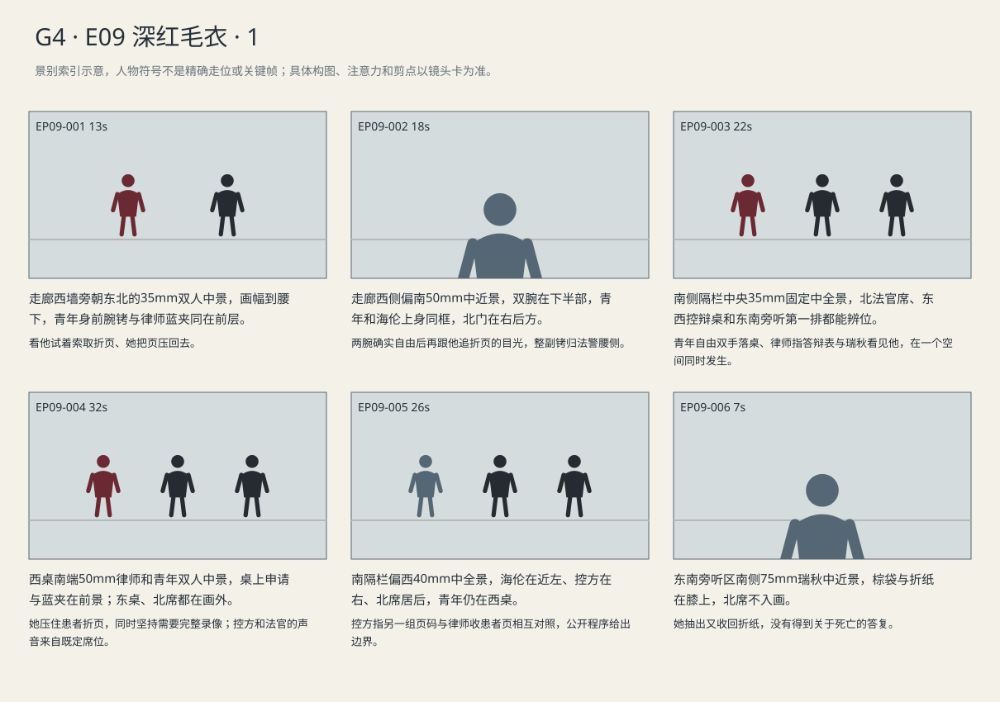
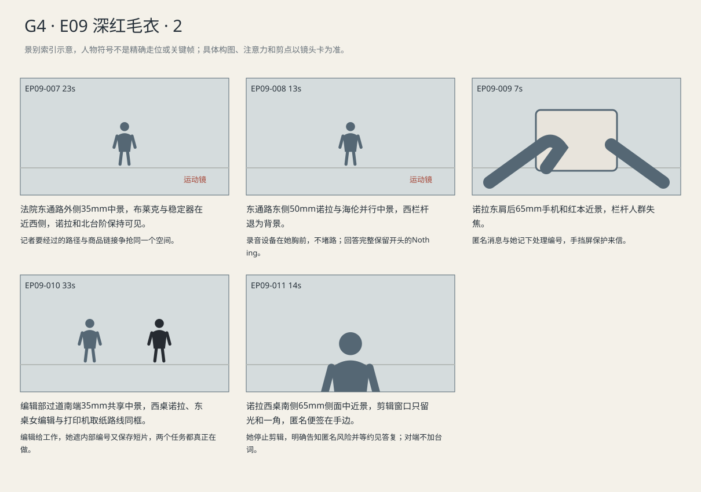

法庭只处理答辩与请求路径，什么也没有被排除；毛衣成为商品，记者仍须靠额外工作换调查时间。
剧本Markdown · 全部独立复制稿 · 英语字幕 · 中文字幕
详细剧本
E09-SC01 · 日·首次州案答辩前 · COURT-CORRIDOR
候庭走廊北门一次只放几个人通过，西侧长椅前，路易吉穿深红毛衣、白衬衫、灰长裤，双腕仍在身前铐住。海伦在他西侧，蓝色案卷夹露出患者折页。
路易吉用被铐住的双手示意蓝夹里的折页，想让海伦现在拿出来。北门打开，海伦把折页压回夹内，带他让开出来的人。
路易吉（英语，催她做一件事）：Can you get that page into the record?
中文对照：能把那一页写进庭审记录吗？
海伦（英语，边让路边交代）：After your plea. The names stay covered.
中文对照：先答辩。名字得遮住。
法警示意伸手，逐一打开两只腕铐，将整副铐子收进自己的腰侧皮套。路易吉先松开指头，再把双手垂在身体两边，白袖口从毛衣内露出一截。
路易吉揉一下手腕，目光仍追着蓝夹。法警把北门拉开，海伦问他的背怎么样；他向门走一步，伸手又收回，没有去拿那张纸。
海伦（英语，走动中低声问）：How's your back?
中文对照：背怎么样？
路易吉（英语，搪塞背痛，马上盯回蓝夹）：I'll be okay. Just don't lose that page.
中文对照：我没事。那页可别弄丢。
E09-SC02 · 日·紧接候庭 · COURT-STATE
法官席在北、辩护桌在西、控方在东，木隔栏后的南侧旁听席已坐满。瑞秋在东南，棕文件袋放膝上。路易吉与海伦由南通道到西桌，双腕自由。
路易吉拉开椅子落座，把两只自由的手放在桌面。瑞秋抬起眼，看清他的脸与整洁衣领，再把棕文件袋移到腿上；法官翻开案卷。
州法官（英语，例行明确）：Mr. Mangione, can you hear me clearly?
中文对照：曼吉奥内先生，你能听清我的话吗？
路易吉（英语，清楚平稳）：Yes, Your Honor.
中文对照：能，法官阁下。
法官问答辩。路易吉先看蓝夹里的折页，海伦用指尖在空白答辩表上点一下；他转回北席明确作答。
州法官（英语，程序提问）：How do you plead to the charges before this court?
中文对照：对本庭所列指控，你如何答辩？
路易吉（英语，停半拍后明确）：Not guilty, Your Honor.
中文对照：不认罪，法官阁下。
海伦站起，将搜查申请交到西桌前供书记收取。蓝夹里的患者折页被青年指尖轻轻推出一角，她用另一只手压住。
海伦（英语，争取具体材料）：We request the full arrest recordings, including the period before the backpack was opened.
中文对照：我们申请完整逮捕记录，包括背包打开以前的部分。
海伦的手还压着患者折页，控方先把背包部分标出，要求西桌说明请求范围。海伦没有让青年替她作答，直接把清单中尚缺的起止时间指给书记员。
州检察官（英语，把请求缩成重复索取）：The defense has the inventory. What else are you asking for?
中文对照：辩方已经拿到物品清单，还要什么？
海伦（英语，不接受把两种材料混为一谈）：The recordings. A list tells us what was logged, not what happened before that.
中文对照：录像。清单记的是登记了什么，不是那之前发生了什么。
州法官（英语，把争执转成可处理的书面范围）：Put the missing material in your request.
中文对照：缺哪些，列进申请。
青年看见折页被压住，手指缩回桌边。海伦转而提出笔记来源，控方翻开副本可见地指出另一组页码；两人没有展示患者姓名。
海伦（英语，区分材料原文和本人陈述，不把亲笔抄录当作作者身份）：Some entries copy patient records. We need to distinguish those from his own statements.
中文对照：部分内容抄自患者记录，需要与他自己的陈述分开。
州检察官（英语，抓程序缺口）：That requires a written motion.
中文对照：那需要书面申请。
法官把当日清单推给书记员，指定来源问题改由书面申请处理。西侧海伦合住蓝夹的纸声传来；法官示意她坐下，低头转到下一项。
州法官（英语，截断扩展）：File it in writing. Redact the patients' names. Today we're setting the schedule.
中文对照：书面提交，遮去患者姓名。今天先安排日程。
瑞秋从棕文件袋抽出一张折纸，捏在手里却没有展开。后排有椅子挪动，她将折纸塞回袋中，仍看着北面。
E09-SC03 · 日·答辩后 · EXTERIOR
法院北台阶下，记者集中在西栏杆外，东侧通路留给出庭者。诺拉抱红本等出口，布莱克的稳定器正占通路半步；路易吉从内部押返通道离开，不在广场。
布莱克让手机对着自己，把商品图弹到直播角落。诺拉从东侧通道绕到稳定器外端，试图先看北台阶是否有人出来。
布莱克（英语，眼睛看评论，熟练接着卖）：That color's back in stock. Link below. It'll ship before the next hearing.
中文对照：这个颜色补货了，链接在下面。下次开庭前发货。
诺拉（英语，普通询问）：Were you inside?
中文对照：你刚才在庭里吗？
海伦出现在北台阶，诺拉想从东侧通道接近，稳定器横过来挡住半步。她把红本贴身收窄，示意布莱克让出空间；他仍盯着评论区。
诺拉（英语，绕设备时问，不停下来争吵）：Can you move?
中文对照：让一下行吗？
布莱克（英语，先应付身旁的人，立刻转回直播）：Hang on, the lawyer's coming out. Size chart's down below.
中文对照：等下，律师出来了。尺码表在下面。
诺拉跟上海伦，手机贴近自己胸前录音，不挡通路。海伦没有停在主播镜头前，边走边回答；诺拉走到南侧后停下，让她离开。
诺拉（英语，抢一句可用答复）：Anything thrown out today?
中文对照：今天排除什么了吗？
海伦（英语，脚步不停，堵住胜利标题）：Nothing. We've asked for the arrest recordings. We don't have them yet.
中文对照：没有。我们申请了逮捕录像，还没拿到。
匿名消息打断诺拉保存录音。她把屏幕向身前转，抄下处理编号，再把来信收起；西栏杆后的主播仍在工作，只作不可辨背景。
E09-SC04 · 夜·当晚 · NEWSROOM
夜间编辑部东桌还有女值班编辑，西桌是诺拉的红本、电脑与匿名便签。北屏静音重播庭审新闻，打印机在过道另一边。
编辑部打印机吐出最后一页，诺拉从西桌绕过去取，编辑伸手想看，她用红本盖住内部编号，只露对照字段。编辑没有接过去。
值班编辑（英语，手已伸向纸，要当天能用的东西）：Can we run this?
中文对照：这能发吗？
诺拉（英语，看着空栏，拒绝先给结论）：Not yet. This box is blank. I don't know what should be in it.
中文对照：还不能。这格空着，我还不知道该填什么。
编辑将毛衣短视频的待剪任务推到她电脑上，诺拉打开了剪辑窗口，又把匿名便签压在键盘边。她没有把任何一项关掉。
值班编辑（英语，把付钱的工作推到她面前）：Get the sweater clip done first. Then follow this up.
中文对照：先把毛衣那条剪完，再查这个。
诺拉（英语，接受交换）：Send me the clean audio.
中文对照：把干净音轨发我。
诺拉把字幕轨拉到开头，编辑看见她还留着匿名材料，停在桌边等成片时点。她没有答应当天写完新报道。
值班编辑（英语，说排期，不评价调查）：The clip's due in ten.
中文对照：短片十分钟后要。
诺拉（英语，先承担手头工作，不承诺没查清的报道）：You'll have it. I'm not running the documents tonight.
中文对照：会交的。那些材料今晚不发。
诺拉一边用左手拖视频音轨，一边将右手手机贴耳拨通匿名号码。听到街边底声，她停下鼠标，把便签翻到空白背面。
诺拉（英语，电话接通后停下工作，把决定留给对方）：I won't use your name. Someone could still figure it out. Do you want to meet?
中文对照：我不会用你的名字，可别人还是可能猜出来。你还想见面吗？
景别索引板
简化人物符号仅用于检索景别。完整镜头卡、信息变化及相邻剪点另页阅读。


逐镜复制稿
EP09-001 · 制作号E09-SH001 · 13s · 走廊西墙旁朝东北的35mm双人中景，画幅到腰下，青年身前腕铐与律师蓝夹同在前层。
看他试着索取折页、她把页压回去。
成片采用 [0,13) 秒；1个生成候选，技术边界不是剪点。候选未生成。
16:9横屏，当代美国真人现实悬疑。环境低至中等饱和，人物肤色保持真实差异与自然纹理；深黑保留衣料和道具分离，白纸与白领高光柔和有层次。冷暖来自本镜已有物理光源，不统一青橙、不磨皮、不以整体欠曝制造悬疑。遵循本镜机位、表演与焦点，不擅自追加缓推、急变焦或摇晃。
场次风格：本场时段：日·首次州案答辩前。本场光源启用及强度以明确时段和正文为准，同场反打继承光源方向；不因景别变化任意换色温。 本地光色与材质：东南窗光按时段影响走廊，西椅、东饮水机与北门层次清楚；同一空间的人物继承一致照明，不用独立圣洁柔光区分立场。深红毛衣维持暗酒红与针织纹理，不偏紫或霓虹红；白领不溢出。
总生成长度15秒，为中间13秒采用区间保留开头和结尾各1秒自然余量，不增添剧情。
人物：
路易吉，26岁意裔男性，深棕短卷发、浓眉、棕眼、较长椭圆脸、清楚下颌、精瘦体态；深红圆领针织毛衣、露出白色衬衫领、深灰裤；腕铐依本镜明确起态和解铐动作执行。声音中低、清楚克制。
海伦，55岁白人女性，短灰金发、窄长脸、深灰西装、灰蓝衬衫、银色腕表，蓝色案卷夹。低中音、短句准确，保留等对方回答的停顿。
环境与光源：走廊南北向；西侧候证椅、东侧饮水机、北端法庭门、南端安检，东南窗光。人物和声音依当前场次，空间母稿不附带剧情事件。
景别/机位：走廊西墙旁朝东北的35mm双人中景，画幅到腰下，青年身前腕铐与律师蓝夹同在前层。
构图：候庭走廊北门一次只放几个人通过，西侧长椅前，路易吉穿深红毛衣、白衬衫、灰长裤，双腕仍在身前铐住。海伦在他西侧，蓝色案卷夹露出患者折页。 本镜画内角色：LUIGI-RED,HELEN。
起始画面：路易吉身前腕铐未解，海伦站他西侧，蓝夹里露出一张折页。
事件与表演：路易吉用被铐住的双手示意蓝夹里的折页，想让海伦现在拿出来。北门打开，海伦把折页压回夹内，带他让开出来的人。
注意力变化：带着公开一页材料的欲望进入正式程序。 → 折页仍在海伦蓝夹内，青年双腕仍在身前铐住。
摄影机：固定；让北门开合和来人经过改变背景，不追出门的人。
焦点：看他试着索取折页、她把页压回去。
结束状态：折页仍在海伦蓝夹内，青年双腕仍在身前铐住。
声音：<开门、钥匙、腕铐和脚步声；法警无可辨对白。>
(无背景音乐，场内连续底声承担空间与节奏。)
准确对白按顺序：
路易吉向海伦，催她做一件事，只使用英语说一次：{Can you get that page into the record?}
海伦向路易吉，边让路边交代，只使用英语说一次：{After your plea. The names stay covered.}
只说列出的英语原句；导演说明不发声，不说中文译文，不额外加旁白或对白。手机/公文/字幕均由后期叠加，生成画面不排字。单镜连续，不加入内部切镜；前后保持身份、服装、门窗、物件与接触状态一致。静帧起态备稿
16:9横屏，当代美国真人现实悬疑。环境低至中等饱和，人物肤色保持真实差异与自然纹理；深黑保留衣料和道具分离，白纸与白领高光柔和有层次。冷暖来自本镜已有物理光源，不统一青橙、不磨皮、不以整体欠曝制造悬疑。遵循本镜机位、表演与焦点，不擅自追加缓推、急变焦或摇晃。
场次风格：本场时段：日·首次州案答辩前。本场光源启用及强度以明确时段和正文为准，同场反打继承光源方向；不因景别变化任意换色温。 本地光色与材质：东南窗光按时段影响走廊，西椅、东饮水机与北门层次清楚；同一空间的人物继承一致照明，不用独立圣洁柔光区分立场。深红毛衣维持暗酒红与针织纹理，不偏紫或霓虹红；白领不溢出。
路易吉，26岁意裔男性，深棕短卷发、浓眉、棕眼、较长椭圆脸、清楚下颌、精瘦体态；深红圆领针织毛衣、露出白色衬衫领、深灰裤；腕铐依本镜明确起态和解铐动作执行。声音中低、清楚克制。
海伦，55岁白人女性，短灰金发、窄长脸、深灰西装、灰蓝衬衫、银色腕表，蓝色案卷夹。低中音、短句准确，保留等对方回答的停顿。
走廊南北向；西侧候证椅、东侧饮水机、北端法庭门、南端安检，东南窗光。人物和声音依当前场次，空间母稿不附带剧情事件。
走廊西墙旁朝东北的35mm双人中景，画幅到腰下，青年身前腕铐与律师蓝夹同在前层。；起态构图：路易吉身前腕铐未解，海伦站他西侧，蓝夹里露出一张折页。。空间方位按上列环境，人物只处于起态；本镜后续调度不出现在静帧。此图不描画尚未发生的动作，不生成字幕和公文长字。
| 英语原句 | 中文对照 | 预定窗口 |
|---|
| 路易吉：Can you get that page into the record? | 能把那一页写进庭审记录吗？ | 1–5.3s |
| 海伦：After your plea. The names stay covered. | 先答辩。名字得遮住。 | 5.6–9.4s |
观众信息：带着公开一页材料的欲望进入正式程序。 → 折页仍在海伦蓝夹内，青年双腕仍在身前铐住。
切点：法警示意伸手，注意从谈判落到解铐的实际动作。
接口：接E09-SH002；法警示意伸手，注意从谈判落到解铐的实际动作。
EP09-002 · 制作号E09-SH002 · 18s · 走廊西侧偏南50mm中近景，双腕在下半部，青年和海伦上身同框，北门在右后方。
两腕确实自由后再跟他追折页的目光，整副铐归法警腰侧。
成片采用 [13,31) 秒；2个生成候选，技术边界不是剪点。候选未生成。
成片镜 E09-SH002 共18秒；下面2个独立生成候选共同服务本镜。技术接续不等于成片剪点，不能将本文件整段提交为一次任务。先制作并核验连续表演、机位和声线，再决定延长或覆盖方案；当前无实际媒体。
【E09-SH002-G01 · 本镜采用 0—9 秒】
16:9横屏，当代美国真人现实悬疑。环境低至中等饱和，人物肤色保持真实差异与自然纹理；深黑保留衣料和道具分离，白纸与白领高光柔和有层次。冷暖来自本镜已有物理光源，不统一青橙、不磨皮、不以整体欠曝制造悬疑。遵循本镜机位、表演与焦点，不擅自追加缓推、急变焦或摇晃。
场次风格：本场时段：日·首次州案答辩前。本场光源启用及强度以明确时段和正文为准，同场反打继承光源方向；不因景别变化任意换色温。 本地光色与材质：东南窗光按时段影响走廊，西椅、东饮水机与北门层次清楚；同一空间的人物继承一致照明，不用独立圣洁柔光区分立场。深红毛衣维持暗酒红与针织纹理，不偏紫或霓虹红；白领不溢出。
总生成长度11秒，为中间9秒采用区间保留开头和结尾各1秒自然余量，不增添剧情。
人物：
以下为连续镜的身份库；人物是否已入画、离场及持物只依本段起态与动作，不能把整镜所有角色同时塞入本段。
路易吉，26岁意裔男性，深棕短卷发、浓眉、棕眼、较长椭圆脸、清楚下颌、精瘦体态；深红圆领针织毛衣、露出白色衬衫领、深灰裤；腕铐依本镜明确起态和解铐动作执行。声音中低、清楚克制。
海伦，55岁白人女性，短灰金发、窄长脸、深灰西装、灰蓝衬衫、银色腕表，蓝色案卷夹。低中音、短句准确，保留等对方回答的停顿。
门侧法警，成年男性，深蓝制服，立在本镜明确的门侧等候押返，无对白，不带来新的证物或消息。
环境与光源：走廊南北向；西侧候证椅、东侧饮水机、北端法庭门、南端安检，东南窗光。人物和声音依当前场次，空间母稿不附带剧情事件。
景别/机位：50mm中近景略重下半身与身前双腕，青年、海伦上身仍在上部，北门右后方。
构图：沿用该成片镜既定机位和场景方向；当前站位、朝向与持物：折页仍在海伦蓝夹内，青年双腕仍在身前铐住。
起始画面：折页仍在海伦蓝夹内，青年双腕仍在身前铐住。
事件与表演：法警示意伸手，逐一打开两只腕铐，将整副铐子收进自己的腰侧皮套。路易吉先松开指头，再把双手垂在身体两边，白袖口从毛衣内露出一截。
注意力变化：折页仍在海伦蓝夹内，青年双腕仍在身前铐住。 → 双手已完全自由；腕铐由法警收走，不在路易吉身上。
摄影机：走廊西侧偏南原位置固定，先完整保留解开两只腕铐、整副收进法警腰套；上仰在本段尚未启动。
焦点：双腕与法警收铐动作清楚，焦点确认铐已离开青年后维持自由双手的连续状态。
结束状态：双手已完全自由；腕铐由法警收走，不在路易吉身上。
声音：<走廊通风、远端安检不可辨人声；当前空间连续环境底声；拟音只随本段真实动作与物件接触发生，已完成事件不重演；可辨英语仅为下列本段对白。>
(无背景音乐，场内连续底声承担空间与节奏。)
准确对白按顺序：
无对白。
只说列出的英语原句；导演说明不发声，不说中文译文，不额外加旁白或对白。手机/公文/字幕均由后期叠加，生成画面不排字。单镜连续，不加入内部切镜；前后保持身份、服装、门窗、物件与接触状态一致。
【E09-SH002-G02 · 本镜采用 9—18 秒】
16:9横屏，当代美国真人现实悬疑。环境低至中等饱和，人物肤色保持真实差异与自然纹理；深黑保留衣料和道具分离，白纸与白领高光柔和有层次。冷暖来自本镜已有物理光源，不统一青橙、不磨皮、不以整体欠曝制造悬疑。遵循本镜机位、表演与焦点，不擅自追加缓推、急变焦或摇晃。
场次风格：本场时段：日·首次州案答辩前。本场光源启用及强度以明确时段和正文为准，同场反打继承光源方向；不因景别变化任意换色温。 本地光色与材质：东南窗光按时段影响走廊，西椅、东饮水机与北门层次清楚；同一空间的人物继承一致照明，不用独立圣洁柔光区分立场。深红毛衣维持暗酒红与针织纹理，不偏紫或霓虹红；白领不溢出。
总生成长度11秒，为中间9秒采用区间保留开头和结尾各1秒自然余量，不增添剧情。
人物：
以下为连续镜的身份库；人物是否已入画、离场及持物只依本段起态与动作，不能把整镜所有角色同时塞入本段。
路易吉，26岁意裔男性，深棕短卷发、浓眉、棕眼、较长椭圆脸、清楚下颌、精瘦体态；深红圆领针织毛衣、露出白色衬衫领、深灰裤；腕铐依本镜明确起态和解铐动作执行。声音中低、清楚克制。
海伦，55岁白人女性，短灰金发、窄长脸、深灰西装、灰蓝衬衫、银色腕表，蓝色案卷夹。低中音、短句准确，保留等对方回答的停顿。
门侧法警，成年男性，深蓝制服，立在本镜明确的门侧等候押返，无对白，不带来新的证物或消息。
环境与光源：走廊南北向；西侧候证椅、东侧饮水机、北端法庭门、南端安检，东南窗光。人物和声音依当前场次，空间母稿不附带剧情事件。
景别/机位：同一50mm机位由腕部重点连续上仰为青年与海伦上身中近景，北门仍在原右后方。
构图：沿用该成片镜既定机位和场景方向；当前站位、朝向与持物：双手已完全自由；腕铐由法警收走，不在路易吉身上。
起始画面：双手已完全自由；腕铐由法警收走，不在路易吉身上。
事件与表演：路易吉揉一下手腕，目光仍追着蓝夹。法警把北门拉开，海伦问他的背怎么样；他向门走一步，伸手又收回，没有去拿那张纸。
注意力变化：双手已完全自由；腕铐由法警收走，不在路易吉身上。 → 青年空手向北入庭，海伦蓝夹在左手，腕铐留法警身上。
摄影机：承接双手已自由的前段终点，青年揉腕时只作一次连续缓慢上仰到面部、蓝夹视线与海伦问话，达到头部空间后停住。
焦点：焦点从已完成的解铐移到青年追着折页的目光；不再重拍解铐或向下寻找已经收走的铐子。
结束状态：青年空手向北入庭，海伦蓝夹在左手，腕铐留法警身上。
声音：<走廊通风、远端安检不可辨人声；当前空间连续环境底声；拟音只随本段真实动作与物件接触发生，已完成事件不重演；可辨英语仅为下列本段对白。>
(无背景音乐，场内连续底声承担空间与节奏。)
准确对白按顺序：
海伦向路易吉，走动中低声问，只使用英语说一次：{How's your back?}
路易吉向海伦，搪塞背痛，马上盯回蓝夹，只使用英语说一次：{I'll be okay. Just don't lose that page.}
只说列出的英语原句；导演说明不发声，不说中文译文，不额外加旁白或对白。手机/公文/字幕均由后期叠加，生成画面不排字。单镜连续，不加入内部切镜；前后保持身份、服装、门窗、物件与接触状态一致。静帧起态备稿
16:9横屏，当代美国真人现实悬疑。环境低至中等饱和，人物肤色保持真实差异与自然纹理；深黑保留衣料和道具分离，白纸与白领高光柔和有层次。冷暖来自本镜已有物理光源，不统一青橙、不磨皮、不以整体欠曝制造悬疑。遵循本镜机位、表演与焦点，不擅自追加缓推、急变焦或摇晃。
场次风格：本场时段：日·首次州案答辩前。本场光源启用及强度以明确时段和正文为准，同场反打继承光源方向；不因景别变化任意换色温。 本地光色与材质：东南窗光按时段影响走廊，西椅、东饮水机与北门层次清楚；同一空间的人物继承一致照明，不用独立圣洁柔光区分立场。深红毛衣维持暗酒红与针织纹理，不偏紫或霓虹红；白领不溢出。
路易吉，26岁意裔男性，深棕短卷发、浓眉、棕眼、较长椭圆脸、清楚下颌、精瘦体态；深红圆领针织毛衣、露出白色衬衫领、深灰裤；腕铐依本镜明确起态和解铐动作执行。声音中低、清楚克制。
海伦，55岁白人女性，短灰金发、窄长脸、深灰西装、灰蓝衬衫、银色腕表，蓝色案卷夹。低中音、短句准确，保留等对方回答的停顿。
门侧法警，成年男性，深蓝制服，立在本镜明确的门侧等候押返，无对白，不带来新的证物或消息。
走廊南北向；西侧候证椅、东侧饮水机、北端法庭门、南端安检，东南窗光。人物和声音依当前场次，空间母稿不附带剧情事件。
走廊西侧偏南50mm中近景，双腕在下半部，青年和海伦上身同框，北门在右后方。；起态构图：折页仍在海伦蓝夹内，青年双腕仍在身前铐住。。空间方位按上列环境，人物只处于起态；本镜后续调度不出现在静帧。此图不描画尚未发生的动作，不生成字幕和公文长字。
| 英语原句 | 中文对照 | 预定窗口 |
|---|
| 海伦：How's your back? | 背怎么样？ | 10–11.8s |
| 路易吉：I'll be okay. Just don't lose that page. | 我没事。那页可别弄丢。 | 12.1–15.4s |
观众信息：折页仍在海伦蓝夹内，青年双腕仍在身前铐住。 → 青年空手向北入庭，海伦蓝夹在左手，腕铐留法警身上。
切点：他空手朝北门跨步，接下一场落座。
接口：本场结果成立后切入 E09-SC02（COURT-STATE，日·紧接候庭）；以新场开头建立空间和人物持物，环境声按新场接入。
EP09-003 · 制作号E09-SH004 · 22s · 南侧隔栏中央35mm固定中全景，北法官席、东西控辩桌和东南旁听第一排都能辨位。
青年自由双手落桌、律师指答辩表与瑞秋看见他，在一个空间同时发生。
成片采用 [31,53) 秒；2个生成候选，技术边界不是剪点。候选未生成。
成片镜 E09-SH004 共22秒；下面2个独立生成候选共同服务本镜。技术接续不等于成片剪点，不能将本文件整段提交为一次任务。先制作并核验连续表演、机位和声线，再决定延长或覆盖方案；当前无实际媒体。
【E09-SH004-G01 · 本镜采用 0—11 秒】
16:9横屏，当代美国真人现实悬疑。环境低至中等饱和，人物肤色保持真实差异与自然纹理；深黑保留衣料和道具分离，白纸与白领高光柔和有层次。冷暖来自本镜已有物理光源，不统一青橙、不磨皮、不以整体欠曝制造悬疑。遵循本镜机位、表演与焦点，不擅自追加缓推、急变焦或摇晃。
场次风格：本场时段：日·紧接候庭。本场光源启用及强度以明确时段和正文为准，同场反打继承光源方向；不因景别变化任意换色温。 本地光色与材质：北高窗与中性顶灯维持旧木、纸白和深灰的层次；法官、辩方与旁听者用同一写实肤色规则。既定遮挡不盖住已交代的递页、手腕或签名动作。深红毛衣维持暗酒红与针织纹理，不偏紫或霓虹红；白领不溢出。
总生成长度13秒，为中间11秒采用区间保留开头和结尾各1秒自然余量，不增添剧情。
人物：
以下为连续镜的身份库；人物是否已入画、离场及持物只依本段起态与动作，不能把整镜所有角色同时塞入本段。
路易吉，26岁意裔男性，深棕短卷发、浓眉、棕眼、较长椭圆脸、清楚下颌、精瘦体态；深红圆领针织毛衣、露出白色衬衫领、深灰裤；腕铐依本镜明确起态和解铐动作执行。声音中低、清楚克制。
海伦，55岁白人女性，短灰金发、窄长脸、深灰西装、灰蓝衬衫、银色腕表，蓝色案卷夹。低中音、短句准确，保留等对方回答的停顿。
州法官，60岁白人男性，短银发、黑法袍.
州检察官，45岁黑人男性，深蓝西装、灰领带。
瑞秋，45岁白人女性，深金棕齐肩发、棕羊毛外套、黑连衣裙、素银耳钉，棕色文件袋。声音中低、压住情绪，不全程哽咽。
环境与光源：法官席北，辩方西、控方东、旁听席南，中轴隔栏；从南或西南拍，瑞秋旁听东南、其他支持者西南。北侧高窗冷光、顶灯中性，深红毛衣保留细微织纹。
景别/机位：南侧隔栏中央35mm固定中全景
构图：沿用该成片镜既定机位和场景方向；当前站位、朝向与持物：路易吉从南隔栏口向西辩方桌走，双手空着。
起始画面：路易吉从南隔栏口向西辩方桌走，双手空着。
事件与表演：路易吉拉开椅子落座，把两只自由的手放在桌面。瑞秋抬起眼，看清他的脸与整洁衣领，再把棕文件袋移到腿上；法官翻开案卷。
注意力变化：路易吉从南隔栏口向西辩方桌走，双手空着。 → 路易吉坐在海伦北侧，双手桌上；瑞秋坐东南。
摄影机：固定保持22秒，不在问答间推近。
焦点：仅响应本段当前动作与受话关系；不预先转向尚未发生的后段事件。
结束状态：路易吉坐在海伦北侧，双手桌上；瑞秋坐东南。
声音：<法院通风和安静大厅底声；当前空间连续环境底声；拟音只随本段真实动作与物件接触发生，已完成事件不重演；可辨英语仅为下列本段对白。>
(无背景音乐，场内连续底声承担空间与节奏。)
准确对白按顺序：
州法官向路易吉，例行明确，只使用英语说一次：{Mr. Mangione, can you hear me clearly?}
路易吉向州法官，清楚平稳，只使用英语说一次：{Yes, Your Honor.}
只说列出的英语原句；导演说明不发声，不说中文译文，不额外加旁白或对白。手机/公文/字幕均由后期叠加，生成画面不排字。单镜连续，不加入内部切镜；前后保持身份、服装、门窗、物件与接触状态一致。
【E09-SH004-G02 · 本镜采用 11—22 秒】
16:9横屏，当代美国真人现实悬疑。环境低至中等饱和，人物肤色保持真实差异与自然纹理；深黑保留衣料和道具分离，白纸与白领高光柔和有层次。冷暖来自本镜已有物理光源，不统一青橙、不磨皮、不以整体欠曝制造悬疑。遵循本镜机位、表演与焦点，不擅自追加缓推、急变焦或摇晃。
场次风格：本场时段：日·紧接候庭。本场光源启用及强度以明确时段和正文为准，同场反打继承光源方向；不因景别变化任意换色温。 本地光色与材质：北高窗与中性顶灯维持旧木、纸白和深灰的层次；法官、辩方与旁听者用同一写实肤色规则。既定遮挡不盖住已交代的递页、手腕或签名动作。深红毛衣维持暗酒红与针织纹理，不偏紫或霓虹红；白领不溢出。
总生成长度13秒，为中间11秒采用区间保留开头和结尾各1秒自然余量，不增添剧情。
人物：
以下为连续镜的身份库；人物是否已入画、离场及持物只依本段起态与动作，不能把整镜所有角色同时塞入本段。
路易吉，26岁意裔男性，深棕短卷发、浓眉、棕眼、较长椭圆脸、清楚下颌、精瘦体态；深红圆领针织毛衣、露出白色衬衫领、深灰裤；腕铐依本镜明确起态和解铐动作执行。声音中低、清楚克制。
海伦，55岁白人女性，短灰金发、窄长脸、深灰西装、灰蓝衬衫、银色腕表，蓝色案卷夹。低中音、短句准确，保留等对方回答的停顿。
州法官，60岁白人男性，短银发、黑法袍.
州检察官，45岁黑人男性，深蓝西装、灰领带。
瑞秋，45岁白人女性，深金棕齐肩发、棕羊毛外套、黑连衣裙、素银耳钉，棕色文件袋。声音中低、压住情绪，不全程哽咽。
环境与光源：法官席北，辩方西、控方东、旁听席南，中轴隔栏；从南或西南拍，瑞秋旁听东南、其他支持者西南。北侧高窗冷光、顶灯中性，深红毛衣保留细微织纹。
景别/机位：南侧隔栏中央35mm固定中全景
构图：沿用该成片镜既定机位和场景方向；当前站位、朝向与持物：路易吉坐在海伦北侧，双手桌上；瑞秋坐东南。
起始画面：路易吉坐在海伦北侧，双手桌上；瑞秋坐东南。
事件与表演：法官问答辩。路易吉先看蓝夹里的折页，海伦用指尖在空白答辩表上点一下；他转回北席明确作答。
注意力变化：路易吉坐在海伦北侧，双手桌上；瑞秋坐东南。 → 不认罪已录入；青年双手自由，右手从纸边收回膝上。
摄影机：固定保持22秒，不在问答间推近。
焦点：仅响应本段当前动作与受话关系；不预先转向尚未发生的后段事件。
结束状态：不认罪已录入；青年双手自由，右手从纸边收回膝上。
声音：<法院通风和安静大厅底声；当前空间连续环境底声；拟音只随本段真实动作与物件接触发生，已完成事件不重演；可辨英语仅为下列本段对白。>
(无背景音乐，场内连续底声承担空间与节奏。)
准确对白按顺序：
州法官向路易吉，程序提问，只使用英语说一次：{How do you plead to the charges before this court?}
路易吉向州法官，停半拍后明确，只使用英语说一次：{Not guilty, Your Honor.}
只说列出的英语原句；导演说明不发声，不说中文译文，不额外加旁白或对白。手机/公文/字幕均由后期叠加，生成画面不排字。单镜连续，不加入内部切镜；前后保持身份、服装、门窗、物件与接触状态一致。静帧起态备稿
16:9横屏，当代美国真人现实悬疑。环境低至中等饱和，人物肤色保持真实差异与自然纹理；深黑保留衣料和道具分离，白纸与白领高光柔和有层次。冷暖来自本镜已有物理光源，不统一青橙、不磨皮、不以整体欠曝制造悬疑。遵循本镜机位、表演与焦点，不擅自追加缓推、急变焦或摇晃。
场次风格：本场时段：日·紧接候庭。本场光源启用及强度以明确时段和正文为准，同场反打继承光源方向；不因景别变化任意换色温。 本地光色与材质：北高窗与中性顶灯维持旧木、纸白和深灰的层次；法官、辩方与旁听者用同一写实肤色规则。既定遮挡不盖住已交代的递页、手腕或签名动作。深红毛衣维持暗酒红与针织纹理，不偏紫或霓虹红；白领不溢出。
路易吉，26岁意裔男性，深棕短卷发、浓眉、棕眼、较长椭圆脸、清楚下颌、精瘦体态；深红圆领针织毛衣、露出白色衬衫领、深灰裤；腕铐依本镜明确起态和解铐动作执行。声音中低、清楚克制。
海伦，55岁白人女性，短灰金发、窄长脸、深灰西装、灰蓝衬衫、银色腕表，蓝色案卷夹。低中音、短句准确，保留等对方回答的停顿。
州法官，60岁白人男性，短银发、黑法袍.
州检察官，45岁黑人男性，深蓝西装、灰领带。
瑞秋，45岁白人女性，深金棕齐肩发、棕羊毛外套、黑连衣裙、素银耳钉，棕色文件袋。声音中低、压住情绪，不全程哽咽。
法官席北，辩方西、控方东、旁听席南，中轴隔栏；从南或西南拍，瑞秋旁听东南、其他支持者西南。北侧高窗冷光、顶灯中性，深红毛衣保留细微织纹。
南侧隔栏中央35mm固定中全景，北法官席、东西控辩桌和东南旁听第一排都能辨位。；起态构图：路易吉从南隔栏口向西辩方桌走，双手空着。。空间方位按上列环境，人物只处于起态；本镜后续调度不出现在静帧。此图不描画尚未发生的动作，不生成字幕和公文长字。
| 英语原句 | 中文对照 | 预定窗口 |
|---|
| 州法官：Mr. Mangione, can you hear me clearly? | 曼吉奥内先生，你能听清我的话吗？ | 1.1–5.1s |
| 路易吉：Yes, Your Honor. | 能，法官阁下。 | 5.5–7.5s |
| 州法官：How do you plead to the charges before this court? | 对本庭所列指控，你如何答辩？ | 12.1–17.7s |
| 路易吉：Not guilty, Your Honor. | 不认罪，法官阁下。 | 18–20.5s |
观众信息：让红毛衣名场面发生在受限的辩护任务中。 → 不认罪已录入；青年双手自由，右手从纸边收回膝上。
切点：海伦站起要求录像，切到她与青年争取材料的桌边。
接口：接E09-SH006；海伦站起要求录像，切到她与青年争取材料的桌边。
EP09-004 · 制作号E09-SH006 · 32s · 西桌南端50mm律师和青年双人中景，桌上申请与蓝夹在前景；东桌、北席都在画外。
她压住患者折页，同时坚持需要完整录像；控方和法官的声音来自既定席位。
成片采用 [53,85) 秒；2个生成候选，技术边界不是剪点。候选未生成。
成片镜 E09-SH006 共32秒；下面2个独立生成候选共同服务本镜。技术接续不等于成片剪点，不能将本文件整段提交为一次任务。先制作并核验连续表演、机位和声线，再决定延长或覆盖方案；当前无实际媒体。
【E09-SH006-G01 · 本镜采用 0—12 秒】
16:9横屏，当代美国真人现实悬疑。环境低至中等饱和，人物肤色保持真实差异与自然纹理；深黑保留衣料和道具分离，白纸与白领高光柔和有层次。冷暖来自本镜已有物理光源，不统一青橙、不磨皮、不以整体欠曝制造悬疑。遵循本镜机位、表演与焦点，不擅自追加缓推、急变焦或摇晃。
场次风格：本场时段：日·紧接候庭。本场光源启用及强度以明确时段和正文为准，同场反打继承光源方向；不因景别变化任意换色温。 本地光色与材质：北高窗与中性顶灯维持旧木、纸白和深灰的层次；法官、辩方与旁听者用同一写实肤色规则。既定遮挡不盖住已交代的递页、手腕或签名动作。深红毛衣维持暗酒红与针织纹理，不偏紫或霓虹红；白领不溢出。
总生成长度14秒，为中间12秒采用区间保留开头和结尾各1秒自然余量，不增添剧情。
人物：
以下为连续镜的身份库；人物是否已入画、离场及持物只依本段起态与动作，不能把整镜所有角色同时塞入本段。
路易吉，26岁意裔男性，深棕短卷发、浓眉、棕眼、较长椭圆脸、清楚下颌、精瘦体态；深红圆领针织毛衣、露出白色衬衫领、深灰裤；腕铐依本镜明确起态和解铐动作执行。声音中低、清楚克制。
海伦，55岁白人女性，短灰金发、窄长脸、深灰西装、灰蓝衬衫、银色腕表，蓝色案卷夹。低中音、短句准确，保留等对方回答的停顿。
州检察官，45岁黑人男性，深蓝西装、灰领带。
州法官，60岁白人男性，短银发、黑法袍.
环境与光源：法官席北，辩方西、控方东、旁听席南，中轴隔栏；从南或西南拍，瑞秋旁听东南、其他支持者西南。北侧高窗冷光、顶灯中性，深红毛衣保留细微织纹。
景别/机位：50mm海伦与青年双人中景，站起律师在上部，坐着青年和蓝夹仍留画面下侧；北席、东桌画外。
构图：沿用该成片镜既定机位和场景方向；当前站位、朝向与持物：不认罪已录入；青年双手自由，右手从纸边收回膝上。
起始画面：不认罪已录入；青年双手自由，右手从纸边收回膝上。
事件与表演：海伦站起，将搜查申请交到西桌前供书记收取。蓝夹里的患者折页被青年指尖轻轻推出一角，她用另一只手压住。
注意力变化：不认罪已录入；青年双手自由，右手从纸边收回膝上。 → 搜查申请已递出，患者折页仍在蓝夹内。
摄影机：西桌南端原机位保持地面位置；海伦真实站起时一次轻微上仰留头部空间，站稳递申请后停止。
焦点：她递申请和压患者折页同框清楚，焦深同时容纳青年伸手又收手。
结束状态：搜查申请已递出，患者折页仍在蓝夹内。
声音：<法院通风和安静大厅底声；当前空间连续环境底声；拟音只随本段真实动作与物件接触发生，已完成事件不重演；可辨英语仅为下列本段对白。>
(无背景音乐，场内连续底声承担空间与节奏。)
准确对白按顺序：
海伦向州法官，争取具体材料，只使用英语说一次：{We request the full arrest recordings, including the period before the backpack was opened.}
只说列出的英语原句；导演说明不发声，不说中文译文，不额外加旁白或对白。手机/公文/字幕均由后期叠加，生成画面不排字。单镜连续，不加入内部切镜；前后保持身份、服装、门窗、物件与接触状态一致。
【E09-SH006-G02 · 本镜采用 12—32 秒】
16:9横屏，当代美国真人现实悬疑。环境低至中等饱和，人物肤色保持真实差异与自然纹理；深黑保留衣料和道具分离，白纸与白领高光柔和有层次。冷暖来自本镜已有物理光源，不统一青橙、不磨皮、不以整体欠曝制造悬疑。遵循本镜机位、表演与焦点，不擅自追加缓推、急变焦或摇晃。
场次风格：本场时段：日·紧接候庭。本场光源启用及强度以明确时段和正文为准，同场反打继承光源方向；不因景别变化任意换色温。 本地光色与材质：北高窗与中性顶灯维持旧木、纸白和深灰的层次；法官、辩方与旁听者用同一写实肤色规则。既定遮挡不盖住已交代的递页、手腕或签名动作。深红毛衣维持暗酒红与针织纹理，不偏紫或霓虹红；白领不溢出。
总生成长度22秒，为中间20秒采用区间保留开头和结尾各1秒自然余量，不增添剧情。
人物：
以下为连续镜的身份库；人物是否已入画、离场及持物只依本段起态与动作，不能把整镜所有角色同时塞入本段。
路易吉，26岁意裔男性，深棕短卷发、浓眉、棕眼、较长椭圆脸、清楚下颌、精瘦体态；深红圆领针织毛衣、露出白色衬衫领、深灰裤；腕铐依本镜明确起态和解铐动作执行。声音中低、清楚克制。
海伦，55岁白人女性，短灰金发、窄长脸、深灰西装、灰蓝衬衫、银色腕表，蓝色案卷夹。低中音、短句准确，保留等对方回答的停顿。
州检察官，45岁黑人男性，深蓝西装、灰领带。
州法官，60岁白人男性，短银发、黑法袍.
环境与光源：法官席北，辩方西、控方东、旁听席南，中轴隔栏；从南或西南拍，瑞秋旁听东南、其他支持者西南。北侧高窗冷光、顶灯中性，深红毛衣保留细微织纹。
景别/机位：保持站姿海伦与坐姿青年上下层的同一双人中景，申请清单与蓝夹仍在下前景。
构图：沿用该成片镜既定机位和场景方向；当前站位、朝向与持物：搜查申请已递出，患者折页仍在蓝夹内。
起始画面：搜查申请已递出，患者折页仍在蓝夹内。
事件与表演：海伦的手还压着患者折页，控方先把背包部分标出，要求西桌说明请求范围。海伦没有让青年替她作答，直接把清单中尚缺的起止时间指给书记员。
注意力变化：搜查申请已递出，患者折页仍在蓝夹内。 → 书记员记下请求，海伦留着清单，青年那张折页仍未展示。
摄影机：固定承接G01上仰后的最终角度和焦距，海伦已经站着，本段不再上仰或重复起身。
焦点：看律师坚持完整录像和青年等待，控方与法官只从既定画外席位发声，焦点不追看画外桌面。
结束状态：书记员记下请求，海伦留着清单，青年那张折页仍未展示。
声音：<法院通风和安静大厅底声；当前空间连续环境底声；拟音只随本段真实动作与物件接触发生，已完成事件不重演；可辨英语仅为下列本段对白。>
(无背景音乐，场内连续底声承担空间与节奏。)
准确对白按顺序：
州检察官向州法官，把请求缩成重复索取，只使用英语说一次：{The defense has the inventory. What else are you asking for?}
海伦向州法官，不接受把两种材料混为一谈，只使用英语说一次：{The recordings. A list tells us what was logged, not what happened before that.}
州法官向控辩双方，把争执转成可处理的书面范围，只使用英语说一次：{Put the missing material in your request.}
只说列出的英语原句；导演说明不发声，不说中文译文，不额外加旁白或对白。手机/公文/字幕均由后期叠加，生成画面不排字。单镜连续，不加入内部切镜；前后保持身份、服装、门窗、物件与接触状态一致。静帧起态备稿
16:9横屏，当代美国真人现实悬疑。环境低至中等饱和，人物肤色保持真实差异与自然纹理；深黑保留衣料和道具分离，白纸与白领高光柔和有层次。冷暖来自本镜已有物理光源，不统一青橙、不磨皮、不以整体欠曝制造悬疑。遵循本镜机位、表演与焦点，不擅自追加缓推、急变焦或摇晃。
场次风格：本场时段：日·紧接候庭。本场光源启用及强度以明确时段和正文为准，同场反打继承光源方向；不因景别变化任意换色温。 本地光色与材质：北高窗与中性顶灯维持旧木、纸白和深灰的层次；法官、辩方与旁听者用同一写实肤色规则。既定遮挡不盖住已交代的递页、手腕或签名动作。深红毛衣维持暗酒红与针织纹理，不偏紫或霓虹红；白领不溢出。
路易吉，26岁意裔男性，深棕短卷发、浓眉、棕眼、较长椭圆脸、清楚下颌、精瘦体态；深红圆领针织毛衣、露出白色衬衫领、深灰裤；腕铐依本镜明确起态和解铐动作执行。声音中低、清楚克制。
海伦，55岁白人女性，短灰金发、窄长脸、深灰西装、灰蓝衬衫、银色腕表，蓝色案卷夹。低中音、短句准确，保留等对方回答的停顿。
州检察官，45岁黑人男性，深蓝西装、灰领带。
州法官，60岁白人男性，短银发、黑法袍.
法官席北，辩方西、控方东、旁听席南，中轴隔栏；从南或西南拍，瑞秋旁听东南、其他支持者西南。北侧高窗冷光、顶灯中性，深红毛衣保留细微织纹。
西桌南端50mm律师和青年双人中景，桌上申请与蓝夹在前景；东桌、北席都在画外。；起态构图：不认罪已录入；青年双手自由，右手从纸边收回膝上。。空间方位按上列环境，人物只处于起态；本镜后续调度不出现在静帧。此图不描画尚未发生的动作，不生成字幕和公文长字。
| 英语原句 | 中文对照 | 预定窗口 |
|---|
| 海伦：We request the full arrest recordings, including the period before the backpack was opened. | 我们申请完整逮捕记录，包括背包打开以前的部分。 | 1–8.2s |
| 州检察官：The defense has the inventory. What else are you asking for? | 辩方已经拿到物品清单，还要什么？ | 13–17.31s |
| 海伦：The recordings. A list tells us what was logged, not what happened before that. | 录像。清单记的是登记了什么，不是那之前发生了什么。 | 17.61–23.1s |
| 州法官：Put the missing material in your request. | 缺哪些，列进申请。 | 23.4–26.15s |
观众信息：不认罪已录入；青年双手自由，右手从纸边收回膝上。 → 书记员记下请求，海伦留着清单，青年那张折页仍未展示。
切点：录像范围被列入请求，海伦转向笔记作者问题，切回能看见控辩同时反应的位置。
接口：接E09-SH007；录像范围被列入请求，海伦转向笔记作者问题，切回能看见控辩同时反应的位置。
EP09-005 · 制作号E09-SH007 · 26s · 南隔栏偏西40mm中全景，海伦在近左、控方在右、北席居后，青年仍在西桌。
控方指另一组页码与律师收患者页相互对照，公开程序给出边界。
成片采用 [85,111) 秒；2个生成候选，技术边界不是剪点。候选未生成。
成片镜 E09-SH007 共26秒；下面2个独立生成候选共同服务本镜。技术接续不等于成片剪点，不能将本文件整段提交为一次任务。先制作并核验连续表演、机位和声线，再决定延长或覆盖方案；当前无实际媒体。
【E09-SH007-G01 · 本镜采用 0—14 秒】
16:9横屏，当代美国真人现实悬疑。环境低至中等饱和，人物肤色保持真实差异与自然纹理；深黑保留衣料和道具分离，白纸与白领高光柔和有层次。冷暖来自本镜已有物理光源，不统一青橙、不磨皮、不以整体欠曝制造悬疑。遵循本镜机位、表演与焦点，不擅自追加缓推、急变焦或摇晃。
场次风格：本场时段：日·紧接候庭。本场光源启用及强度以明确时段和正文为准，同场反打继承光源方向；不因景别变化任意换色温。 本地光色与材质：北高窗与中性顶灯维持旧木、纸白和深灰的层次；法官、辩方与旁听者用同一写实肤色规则。既定遮挡不盖住已交代的递页、手腕或签名动作。深红毛衣维持暗酒红与针织纹理，不偏紫或霓虹红；白领不溢出。
总生成长度16秒，为中间14秒采用区间保留开头和结尾各1秒自然余量，不增添剧情。
人物：
以下为连续镜的身份库；人物是否已入画、离场及持物只依本段起态与动作，不能把整镜所有角色同时塞入本段。
路易吉，26岁意裔男性，深棕短卷发、浓眉、棕眼、较长椭圆脸、清楚下颌、精瘦体态；深红圆领针织毛衣、露出白色衬衫领、深灰裤；腕铐依本镜明确起态和解铐动作执行。声音中低、清楚克制。
海伦，55岁白人女性，短灰金发、窄长脸、深灰西装、灰蓝衬衫、银色腕表，蓝色案卷夹。低中音、短句准确，保留等对方回答的停顿。
州检察官，45岁黑人男性，深蓝西装、灰领带。
州法官，60岁白人男性，短银发、黑法袍.
环境与光源：法官席北，辩方西、控方东、旁听席南，中轴隔栏；从南或西南拍，瑞秋旁听东南、其他支持者西南。北侧高窗冷光、顶灯中性，深红毛衣保留细微织纹。
景别/机位：南隔栏偏西40mm中全景
构图：沿用该成片镜既定机位和场景方向；当前站位、朝向与持物：书记员记下请求，海伦留着清单，青年那张折页仍未展示。
起始画面：书记员记下请求，海伦留着清单，青年那张折页仍未展示。
事件与表演：青年看见折页被压住，手指缩回桌边。海伦转而提出笔记来源，控方翻开副本可见地指出另一组页码；两人没有展示患者姓名。
注意力变化：书记员记下请求，海伦留着清单，青年那张折页仍未展示。 → 控方副本与患者折页分开，来源争议未获当庭展开。
摄影机：固定；法官示意坐下后让海伦自行降回构图，不切法官正面。
焦点：仅响应本段当前动作与受话关系；不预先转向尚未发生的后段事件。
结束状态：控方副本与患者折页分开，来源争议未获当庭展开。
声音：<法院通风和安静大厅底声；当前空间连续环境底声；拟音只随本段真实动作与物件接触发生，已完成事件不重演；可辨英语仅为下列本段对白。>
(无背景音乐，场内连续底声承担空间与节奏。)
准确对白按顺序：
海伦向州法官，区分材料原文和本人陈述，不把亲笔抄录当作作者身份，只使用英语说一次：{Some entries copy patient records. We need to distinguish those from his own statements.}
州检察官向州法官，抓程序缺口，只使用英语说一次：{That requires a written motion.}
只说列出的英语原句；导演说明不发声，不说中文译文，不额外加旁白或对白。手机/公文/字幕均由后期叠加，生成画面不排字。单镜连续，不加入内部切镜；前后保持身份、服装、门窗、物件与接触状态一致。
【E09-SH007-G02 · 本镜采用 14—26 秒】
16:9横屏，当代美国真人现实悬疑。环境低至中等饱和，人物肤色保持真实差异与自然纹理；深黑保留衣料和道具分离，白纸与白领高光柔和有层次。冷暖来自本镜已有物理光源，不统一青橙、不磨皮、不以整体欠曝制造悬疑。遵循本镜机位、表演与焦点，不擅自追加缓推、急变焦或摇晃。
场次风格：本场时段：日·紧接候庭。本场光源启用及强度以明确时段和正文为准，同场反打继承光源方向；不因景别变化任意换色温。 本地光色与材质：北高窗与中性顶灯维持旧木、纸白和深灰的层次；法官、辩方与旁听者用同一写实肤色规则。既定遮挡不盖住已交代的递页、手腕或签名动作。深红毛衣维持暗酒红与针织纹理，不偏紫或霓虹红；白领不溢出。
总生成长度14秒，为中间12秒采用区间保留开头和结尾各1秒自然余量，不增添剧情。
人物：
以下为连续镜的身份库；人物是否已入画、离场及持物只依本段起态与动作，不能把整镜所有角色同时塞入本段。
路易吉，26岁意裔男性，深棕短卷发、浓眉、棕眼、较长椭圆脸、清楚下颌、精瘦体态；深红圆领针织毛衣、露出白色衬衫领、深灰裤；腕铐依本镜明确起态和解铐动作执行。声音中低、清楚克制。
海伦，55岁白人女性，短灰金发、窄长脸、深灰西装、灰蓝衬衫、银色腕表，蓝色案卷夹。低中音、短句准确，保留等对方回答的停顿。
州检察官，45岁黑人男性，深蓝西装、灰领带。
州法官，60岁白人男性，短银发、黑法袍.
环境与光源：法官席北，辩方西、控方东、旁听席南，中轴隔栏；从南或西南拍，瑞秋旁听东南、其他支持者西南。北侧高窗冷光、顶灯中性，深红毛衣保留细微织纹。
景别/机位：南隔栏偏西40mm中全景
构图：沿用该成片镜既定机位和场景方向；当前站位、朝向与持物：控方副本与患者折页分开，来源争议未获当庭展开。
起始画面：控方副本与患者折页分开，来源争议未获当庭展开。
事件与表演：法官把当日清单推给书记员，指定来源问题改由书面申请处理。西侧海伦合住蓝夹的纸声传来；法官示意她坐下，低头转到下一项。
注意力变化：控方副本与患者折页分开，来源争议未获当庭展开。 → 法官转到下一项；西侧合夹声已结束，患者折页在画外仍由海伦保管。
摄影机：固定；法官示意坐下后让海伦自行降回构图，不切法官正面。
焦点：仅响应本段当前动作与受话关系；不预先转向尚未发生的后段事件。
结束状态：法官转到下一项；西侧合夹声已结束，患者折页在画外仍由海伦保管。
声音：<法院通风和安静大厅底声；当前空间连续环境底声；拟音只随本段真实动作与物件接触发生，已完成事件不重演；可辨英语仅为下列本段对白。>
(无背景音乐，场内连续底声承担空间与节奏。)
准确对白按顺序：
州法官向海伦，截断扩展，只使用英语说一次：{File it in writing. Redact the patients' names. Today we're setting the schedule.}
只说列出的英语原句；导演说明不发声，不说中文译文，不额外加旁白或对白。手机/公文/字幕均由后期叠加，生成画面不排字。单镜连续，不加入内部切镜；前后保持身份、服装、门窗、物件与接触状态一致。静帧起态备稿
16:9横屏，当代美国真人现实悬疑。环境低至中等饱和，人物肤色保持真实差异与自然纹理；深黑保留衣料和道具分离，白纸与白领高光柔和有层次。冷暖来自本镜已有物理光源，不统一青橙、不磨皮、不以整体欠曝制造悬疑。遵循本镜机位、表演与焦点，不擅自追加缓推、急变焦或摇晃。
场次风格：本场时段：日·紧接候庭。本场光源启用及强度以明确时段和正文为准，同场反打继承光源方向；不因景别变化任意换色温。 本地光色与材质：北高窗与中性顶灯维持旧木、纸白和深灰的层次；法官、辩方与旁听者用同一写实肤色规则。既定遮挡不盖住已交代的递页、手腕或签名动作。深红毛衣维持暗酒红与针织纹理，不偏紫或霓虹红；白领不溢出。
路易吉，26岁意裔男性，深棕短卷发、浓眉、棕眼、较长椭圆脸、清楚下颌、精瘦体态；深红圆领针织毛衣、露出白色衬衫领、深灰裤；腕铐依本镜明确起态和解铐动作执行。声音中低、清楚克制。
海伦，55岁白人女性，短灰金发、窄长脸、深灰西装、灰蓝衬衫、银色腕表，蓝色案卷夹。低中音、短句准确，保留等对方回答的停顿。
州检察官，45岁黑人男性，深蓝西装、灰领带。
州法官，60岁白人男性，短银发、黑法袍.
法官席北，辩方西、控方东、旁听席南，中轴隔栏；从南或西南拍，瑞秋旁听东南、其他支持者西南。北侧高窗冷光、顶灯中性，深红毛衣保留细微织纹。
南隔栏偏西40mm中全景，海伦在近左、控方在右、北席居后，青年仍在西桌。；起态构图：书记员记下请求，海伦留着清单，青年那张折页仍未展示。。空间方位按上列环境，人物只处于起态；本镜后续调度不出现在静帧。此图不描画尚未发生的动作，不生成字幕和公文长字。
| 英语原句 | 中文对照 | 预定窗口 |
|---|
| 海伦：Some entries copy patient records. We need to distinguish those from his own statements. | 部分内容抄自患者记录，需要与他自己的陈述分开。 | 1–7.7s |
| 州检察官：That requires a written motion. | 那需要书面申请。 | 8–10.8s |
| 州法官：File it in writing. Redact the patients' names. Today we're setting the schedule. | 书面提交，遮去患者姓名。今天先安排日程。 | 15–21.7s |
观众信息：书记员记下请求，海伦留着清单，青年那张折页仍未展示。 → 法官转到下一项；西侧合夹声已结束，患者折页在画外仍由海伦保管。
切点：法官转下一项，程序继续，切给这一结果落到谁身上。
接口：接E09-SH009；法官转下一项，程序继续，切给这一结果落到谁身上。
EP09-006 · 制作号E09-SH009 · 7s · 东南旁听区南侧75mm瑞秋中近景，棕袋与折纸在膝上，北席不入画。
她抽出又收回折纸，没有得到关于死亡的答复。
成片采用 [111,118) 秒；1个生成候选，技术边界不是剪点。候选未生成。
16:9横屏，当代美国真人现实悬疑。环境低至中等饱和，人物肤色保持真实差异与自然纹理；深黑保留衣料和道具分离，白纸与白领高光柔和有层次。冷暖来自本镜已有物理光源，不统一青橙、不磨皮、不以整体欠曝制造悬疑。遵循本镜机位、表演与焦点，不擅自追加缓推、急变焦或摇晃。
场次风格：本场时段：日·紧接候庭。本场光源启用及强度以明确时段和正文为准，同场反打继承光源方向；不因景别变化任意换色温。 本地光色与材质：北高窗与中性顶灯维持旧木、纸白和深灰的层次；法官、辩方与旁听者用同一写实肤色规则。既定遮挡不盖住已交代的递页、手腕或签名动作。
总生成长度9秒，为中间7秒采用区间保留开头和结尾各1秒自然余量，不增添剧情。
人物：
瑞秋，45岁白人女性，深金棕齐肩发、棕羊毛外套、黑连衣裙、素银耳钉，棕色文件袋。声音中低、压住情绪，不全程哽咽。
环境与光源：法官席北，辩方西、控方东、旁听席南，中轴隔栏；从南或西南拍，瑞秋旁听东南、其他支持者西南。北侧高窗冷光、顶灯中性，深红毛衣保留细微织纹。
景别/机位：东南旁听区南侧75mm瑞秋中近景，棕袋与折纸在膝上，北席不入画。
构图：法官席在北、辩护桌在西、控方在东，木隔栏后的南侧旁听席已坐满。瑞秋在东南，棕文件袋放膝上。路易吉与海伦由南通道到西桌，双腕自由。 本镜画内角色：RACHEL。
起始画面：法官转到下一项；西侧合夹声已结束，患者折页在画外仍由海伦保管。
事件与表演：瑞秋从棕文件袋抽出一张折纸，捏在手里却没有展开。后排有椅子挪动，她将折纸塞回袋中，仍看着北面。
注意力变化：法官转到下一项；西侧合夹声已结束，患者折页在画外仍由海伦保管。 → 折纸回棕袋，瑞秋没有与西侧青年对视；青年自由双手在画外继承。
摄影机：固定7秒，不推近折纸，不揭纸上内容。
焦点：她抽出又收回折纸，没有得到关于死亡的答复。
结束状态：折纸回棕袋，瑞秋没有与西侧青年对视；青年自由双手在画外继承。
声音：<木椅、纸页与法庭室内混响，所列台词按既定席位发声，旁听者不喊话。>
(无背景音乐，场内连续底声承担空间与节奏。)
准确对白按顺序：
无对白。
只说列出的英语原句；导演说明不发声，不说中文译文，不额外加旁白或对白。手机/公文/字幕均由后期叠加，生成画面不排字。单镜连续，不加入内部切镜；前后保持身份、服装、门窗、物件与接触状态一致。
静帧起态备稿
16:9横屏，当代美国真人现实悬疑。环境低至中等饱和，人物肤色保持真实差异与自然纹理；深黑保留衣料和道具分离，白纸与白领高光柔和有层次。冷暖来自本镜已有物理光源，不统一青橙、不磨皮、不以整体欠曝制造悬疑。遵循本镜机位、表演与焦点，不擅自追加缓推、急变焦或摇晃。
场次风格：本场时段：日·紧接候庭。本场光源启用及强度以明确时段和正文为准，同场反打继承光源方向；不因景别变化任意换色温。 本地光色与材质：北高窗与中性顶灯维持旧木、纸白和深灰的层次；法官、辩方与旁听者用同一写实肤色规则。既定遮挡不盖住已交代的递页、手腕或签名动作。
瑞秋，45岁白人女性，深金棕齐肩发、棕羊毛外套、黑连衣裙、素银耳钉，棕色文件袋。声音中低、压住情绪，不全程哽咽。
法官席北，辩方西、控方东、旁听席南，中轴隔栏；从南或西南拍，瑞秋旁听东南、其他支持者西南。北侧高窗冷光、顶灯中性，深红毛衣保留细微织纹。
东南旁听区南侧75mm瑞秋中近景，棕袋与折纸在膝上，北席不入画。；起态构图：法官转到下一项；西侧合夹声已结束，患者折页在画外仍由海伦保管。。空间方位按上列环境，人物只处于起态；本镜后续调度不出现在静帧。此图不描画尚未发生的动作，不生成字幕和公文长字。
观众信息：法官转到下一项；西侧合夹声已结束，患者折页在画外仍由海伦保管。 → 折纸回棕袋，瑞秋没有与西侧青年对视；青年自由双手在画外继承。
切点：她重新望北席，转庭外商品化热闹，私人损失留在前一镜。
接口：本场结果成立后切入 E09-SC03（EXTERIOR，日·答辩后）；以新场开头建立空间和人物持物，环境声按新场接入。
EP09-007 · 制作号E09-SH010 · 23s · 法院东通路外侧35mm中景，布莱克与稳定器在近西侧，诺拉和北台阶保持可见。
记者要经过的路径与商品链接争抢同一个空间。
成片采用 [118,141) 秒；2个生成候选，技术边界不是剪点。候选未生成。
成片镜 E09-SH010 共23秒；下面2个独立生成候选共同服务本镜。技术接续不等于成片剪点，不能将本文件整段提交为一次任务。先制作并核验连续表演、机位和声线，再决定延长或覆盖方案；当前无实际媒体。
【E09-SH010-G01 · 本镜采用 0—13 秒】
16:9横屏，当代美国真人现实悬疑。环境低至中等饱和，人物肤色保持真实差异与自然纹理；深黑保留衣料和道具分离，白纸与白领高光柔和有层次。冷暖来自本镜已有物理光源，不统一青橙、不磨皮、不以整体欠曝制造悬疑。遵循本镜机位、表演与焦点，不擅自追加缓推、急变焦或摇晃。
场次风格：本场时段：日·答辩后。本场光源启用及强度以明确时段和正文为准，同场反打继承光源方向；不因景别变化任意换色温。 本地光色与材质：沿用本镜明确的街道、入口和时段，灰石、外套与肤色保持自然；围观手机或采访设备不自动带来新的全场光源。
总生成长度15秒，为中间13秒采用区间保留开头和结尾各1秒自然余量，不增添剧情。
人物：
以下为连续镜的身份库；人物是否已入画、离场及持物只依本段起态与动作，不能把整镜所有角色同时塞入本段。
直播者布莱克，30岁白人男性，黑短发、黑夹克、白T恤、手机稳定器。前期售卖周边，后期围堵诊所；不新增他受公司秘密指使的阴谋。
诺拉，32岁华裔美国女性，黑色齐肩直发、灰蓝大衣、米白衬衫、深色牛仔裤、黑鞋，红皮笔记本和黑手机。声音明亮清楚，采访时给对方说完。
海伦，55岁白人女性，短灰金发、窄长脸、深灰西装、灰蓝衬衫、银色腕表，蓝色案卷夹。低中音、短句准确，保留等对方回答的停顿。
环境与光源：沿用该成片镜既定机位和场景方向；当前站位、朝向与持物：布莱克举稳定器，诺拉从东通道走到栏杆边。；真实街道或法院外的既定入口与道路，不另建第二套空间；准确界面文字由后期叠加。
景别/机位：35mm中景随第一段向北小移，布莱克与设备在近西侧、诺拉和北台阶仍可见。
构图：沿用该成片镜既定机位和场景方向；当前站位、朝向与持物：布莱克举稳定器，诺拉从东通道走到栏杆边。
起始画面：布莱克举稳定器，诺拉从东通道走到栏杆边。
事件与表演：布莱克让手机对着自己，把商品图弹到直播角落。诺拉从东侧通道绕到稳定器外端，试图先看北台阶是否有人出来。
注意力变化：布莱克举稳定器，诺拉从东通道走到栏杆边。 → 商品直播继续，诺拉视线越过主播看法院出口。
摄影机：从法院东通路外侧原机位随诺拉向北开始小幅跟移；只跟到她绕至稳定器外端的当前进度，不提前完成后段被挡的停步。
焦点：诺拉越过商品直播找出口，稳定器仍是同一近景障碍；保持人物与通路可读。
结束状态：商品直播继续，诺拉视线越过主播看法院出口。
声音：<本场已建立街道或法院外的远交通与风声；当前空间连续环境底声；拟音只随本段真实动作与物件接触发生，已完成事件不重演；可辨英语仅为下列本段对白。>
(无背景音乐，场内连续底声承担空间与节奏。)
准确对白按顺序：
布莱克向直播观众，眼睛看评论，熟练接着卖，只使用英语说一次：{That color's back in stock. Link below. It'll ship before the next hearing.}
诺拉向布莱克，普通询问，只使用英语说一次：{Were you inside?}
只说列出的英语原句；导演说明不发声，不说中文译文，不额外加旁白或对白。手机/公文/字幕均由后期叠加，生成画面不排字。单镜连续，不加入内部切镜；前后保持身份、服装、门窗、物件与接触状态一致。
【E09-SH010-G02 · 本镜采用 13—23 秒】
16:9横屏，当代美国真人现实悬疑。环境低至中等饱和，人物肤色保持真实差异与自然纹理；深黑保留衣料和道具分离，白纸与白领高光柔和有层次。冷暖来自本镜已有物理光源，不统一青橙、不磨皮、不以整体欠曝制造悬疑。遵循本镜机位、表演与焦点，不擅自追加缓推、急变焦或摇晃。
场次风格：本场时段：日·答辩后。本场光源启用及强度以明确时段和正文为准，同场反打继承光源方向；不因景别变化任意换色温。 本地光色与材质：沿用本镜明确的街道、入口和时段，灰石、外套与肤色保持自然；围观手机或采访设备不自动带来新的全场光源。
总生成长度12秒，为中间10秒采用区间保留开头和结尾各1秒自然余量，不增添剧情。
人物：
以下为连续镜的身份库；人物是否已入画、离场及持物只依本段起态与动作，不能把整镜所有角色同时塞入本段。
直播者布莱克，30岁白人男性，黑短发、黑夹克、白T恤、手机稳定器。前期售卖周边，后期围堵诊所；不新增他受公司秘密指使的阴谋。
诺拉，32岁华裔美国女性，黑色齐肩直发、灰蓝大衣、米白衬衫、深色牛仔裤、黑鞋，红皮笔记本和黑手机。声音明亮清楚，采访时给对方说完。
海伦，55岁白人女性，短灰金发、窄长脸、深灰西装、灰蓝衬衫、银色腕表，蓝色案卷夹。低中音、短句准确，保留等对方回答的停顿。
环境与光源：沿用该成片镜既定机位和场景方向；当前站位、朝向与持物：商品直播继续，诺拉视线越过主播看法院出口。；真实街道或法院外的既定入口与道路，不另建第二套空间；准确界面文字由后期叠加。
景别/机位：由前段终点连续向北微移到受阻位置，仍是同一35mm中景；诺拉收本从设备东侧通过，主播留西栏杆。
构图：沿用该成片镜既定机位和场景方向；当前站位、朝向与持物：商品直播继续，诺拉视线越过主播看法院出口。
起始画面：商品直播继续，诺拉视线越过主播看法院出口。
事件与表演：海伦出现在北台阶，诺拉想从东侧通道接近，稳定器横过来挡住半步。她把红本贴身收窄，示意布莱克让出空间；他仍盯着评论区。
注意力变化：商品直播继续，诺拉视线越过主播看法院出口。 → 诺拉从稳定器东侧通过，布莱克留在西栏杆外。
摄影机：继承G01已向北移动的当前位置和朝向，不退回出发点；只完成诺拉靠近海伦时剩余的短距离，稳定器横挡半步即停，不另起第二轮两步跟移。
焦点：阻挡出现时保持两人和设备空间关系，诺拉通过后不接着追海伦；下一成片镜才承担随行问答。
结束状态：诺拉从稳定器东侧通过，布莱克留在西栏杆外。
声音：<本场已建立街道或法院外的远交通与风声；当前空间连续环境底声；拟音只随本段真实动作与物件接触发生，已完成事件不重演；可辨英语仅为下列本段对白。>
(无背景音乐，场内连续底声承担空间与节奏。)
准确对白按顺序：
诺拉向布莱克，绕设备时问，不停下来争吵，只使用英语说一次：{Can you move?}
布莱克向直播观众，先应付身旁的人，立刻转回直播，只使用英语说一次：{Hang on, the lawyer's coming out. Size chart's down below.}
只说列出的英语原句；导演说明不发声，不说中文译文，不额外加旁白或对白。手机/公文/字幕均由后期叠加，生成画面不排字。单镜连续，不加入内部切镜；前后保持身份、服装、门窗、物件与接触状态一致。静帧起态备稿
16:9横屏，当代美国真人现实悬疑。环境低至中等饱和，人物肤色保持真实差异与自然纹理；深黑保留衣料和道具分离，白纸与白领高光柔和有层次。冷暖来自本镜已有物理光源，不统一青橙、不磨皮、不以整体欠曝制造悬疑。遵循本镜机位、表演与焦点，不擅自追加缓推、急变焦或摇晃。
场次风格：本场时段：日·答辩后。本场光源启用及强度以明确时段和正文为准，同场反打继承光源方向；不因景别变化任意换色温。 本地光色与材质：沿用本镜明确的街道、入口和时段，灰石、外套与肤色保持自然；围观手机或采访设备不自动带来新的全场光源。
直播者布莱克，30岁白人男性，黑短发、黑夹克、白T恤、手机稳定器。前期售卖周边，后期围堵诊所；不新增他受公司秘密指使的阴谋。
诺拉，32岁华裔美国女性，黑色齐肩直发、灰蓝大衣、米白衬衫、深色牛仔裤、黑鞋，红皮笔记本和黑手机。声音明亮清楚，采访时给对方说完。
海伦，55岁白人女性，短灰金发、窄长脸、深灰西装、灰蓝衬衫、银色腕表，蓝色案卷夹。低中音、短句准确，保留等对方回答的停顿。
法院北台阶下，记者集中在西栏杆外，东侧通路留给出庭者。诺拉抱红本等出口，布莱克的稳定器正占通路半步；路易吉从内部押返通道离开，不在广场。 本镜画内角色：HOST,NORA,HELEN。；真实街道或法院外的既定入口与道路，不另建第二套空间；准确界面文字由后期叠加。
法院东通路外侧35mm中景，布莱克与稳定器在近西侧，诺拉和北台阶保持可见。；起态构图：布莱克举稳定器，诺拉从东通道走到栏杆边。。空间方位按上列环境，人物只处于起态；本镜后续调度不出现在静帧。此图不描画尚未发生的动作，不生成字幕和公文长字。
| 英语原句 | 中文对照 | 预定窗口 |
|---|
| 布莱克：That color's back in stock. Link below. It'll ship before the next hearing. | 这个颜色补货了，链接在下面。下次开庭前发货。 | 1.1–8.7s |
| 诺拉：Were you inside? | 你刚才在庭里吗？ | 9.1–11.1s |
| 诺拉：Can you move? | 让一下行吗？ | 14–16.3s |
| 布莱克：Hang on, the lawyer's coming out. Size chart's down below. | 等下，律师出来了。尺码表在下面。 | 16.6–21.3s |
观众信息：把公众消费与记者实际追问放在同一条通路。 → 诺拉从稳定器东侧通过，布莱克留在西栏杆外。
切点：海伦下台阶，诺拉绕过设备接近，切随行视角。
接口：接E09-SH012；海伦下台阶，诺拉绕过设备接近，切随行视角。
EP09-008 · 制作号E09-SH012 · 13s · 东通路东侧50mm诺拉与海伦并行中景，西栏杆退为背景。
录音设备在她胸前，不堵路；回答完整保留开头的Nothing。
成片采用 [141,154) 秒；1个生成候选，技术边界不是剪点。候选未生成。
16:9横屏，当代美国真人现实悬疑。环境低至中等饱和，人物肤色保持真实差异与自然纹理；深黑保留衣料和道具分离，白纸与白领高光柔和有层次。冷暖来自本镜已有物理光源，不统一青橙、不磨皮、不以整体欠曝制造悬疑。遵循本镜机位、表演与焦点，不擅自追加缓推、急变焦或摇晃。
场次风格：本场时段：日·答辩后。本场光源启用及强度以明确时段和正文为准，同场反打继承光源方向；不因景别变化任意换色温。 本地光色与材质：沿用本镜明确的街道、入口和时段，灰石、外套与肤色保持自然；围观手机或采访设备不自动带来新的全场光源。
总生成长度15秒，为中间13秒采用区间保留开头和结尾各1秒自然余量，不增添剧情。
人物：
诺拉，32岁华裔美国女性，黑色齐肩直发、灰蓝大衣、米白衬衫、深色牛仔裤、黑鞋，红皮笔记本和黑手机。声音明亮清楚，采访时给对方说完。
海伦，55岁白人女性，短灰金发、窄长脸、深灰西装、灰蓝衬衫、银色腕表，蓝色案卷夹。低中音、短句准确，保留等对方回答的停顿。
环境与光源：法院北台阶下，记者集中在西栏杆外，东侧通路留给出庭者。诺拉抱红本等出口，布莱克的稳定器正占通路半步；路易吉从内部押返通道离开，不在广场。 本镜画内角色：NORA,HELEN。；真实街道或法院外的既定入口与道路，不另建第二套空间；准确界面文字由后期叠加。
景别/机位：东通路东侧50mm诺拉与海伦并行中景，西栏杆退为背景。
构图：法院北台阶下，记者集中在西栏杆外，东侧通路留给出庭者。诺拉抱红本等出口，布莱克的稳定器正占通路半步；路易吉从内部押返通道离开，不在广场。 本镜画内角色：NORA,HELEN。
起始画面：诺拉从稳定器东侧通过，布莱克留在西栏杆外。
事件与表演：诺拉跟上海伦，手机贴近自己胸前录音，不挡通路。海伦没有停在主播镜头前，边走边回答；诺拉走到南侧后停下，让她离开。
注意力变化：诺拉从稳定器东侧通过，布莱克留在西栏杆外。 → 海伦向南走出，诺拉停在东侧通道，录音已得完整答复。
摄影机：实拍平行向南后退三米，海伦答完离开后停在诺拉。
焦点：录音设备在她胸前，不堵路；回答完整保留开头的Nothing。
结束状态：海伦向南走出，诺拉停在东侧通道，录音已得完整答复。
声音：<庭外人群底声与所列现场话语，后期文字不额外朗读。>
(无背景音乐，场内连续底声承担空间与节奏。)
准确对白按顺序：
诺拉向海伦，抢一句可用答复，只使用英语说一次：{Anything thrown out today?}
海伦向诺拉，脚步不停，堵住胜利标题，只使用英语说一次：{Nothing. We've asked for the arrest recordings. We don't have them yet.}
只说列出的英语原句；导演说明不发声，不说中文译文，不额外加旁白或对白。手机/公文/字幕均由后期叠加，生成画面不排字。单镜连续，不加入内部切镜；前后保持身份、服装、门窗、物件与接触状态一致。静帧起态备稿
16:9横屏，当代美国真人现实悬疑。环境低至中等饱和，人物肤色保持真实差异与自然纹理；深黑保留衣料和道具分离，白纸与白领高光柔和有层次。冷暖来自本镜已有物理光源，不统一青橙、不磨皮、不以整体欠曝制造悬疑。遵循本镜机位、表演与焦点，不擅自追加缓推、急变焦或摇晃。
场次风格：本场时段：日·答辩后。本场光源启用及强度以明确时段和正文为准，同场反打继承光源方向；不因景别变化任意换色温。 本地光色与材质：沿用本镜明确的街道、入口和时段，灰石、外套与肤色保持自然；围观手机或采访设备不自动带来新的全场光源。
诺拉，32岁华裔美国女性，黑色齐肩直发、灰蓝大衣、米白衬衫、深色牛仔裤、黑鞋，红皮笔记本和黑手机。声音明亮清楚，采访时给对方说完。
海伦，55岁白人女性，短灰金发、窄长脸、深灰西装、灰蓝衬衫、银色腕表，蓝色案卷夹。低中音、短句准确，保留等对方回答的停顿。
法院北台阶下，记者集中在西栏杆外，东侧通路留给出庭者。诺拉抱红本等出口，布莱克的稳定器正占通路半步；路易吉从内部押返通道离开，不在广场。 本镜画内角色：NORA,HELEN。；真实街道或法院外的既定入口与道路，不另建第二套空间；准确界面文字由后期叠加。
东通路东侧50mm诺拉与海伦并行中景，西栏杆退为背景。；起态构图：诺拉从稳定器东侧通过，布莱克留在西栏杆外。。空间方位按上列环境，人物只处于起态；本镜后续调度不出现在静帧。此图不描画尚未发生的动作，不生成字幕和公文长字。
| 英语原句 | 中文对照 | 预定窗口 |
|---|
| 诺拉：Anything thrown out today? | 今天排除什么了吗？ | 1–3.3s |
| 海伦：Nothing. We've asked for the arrest recordings. We don't have them yet. | 没有。我们申请了逮捕录像，还没拿到。 | 3.6–9.3s |
观众信息：诺拉从稳定器东侧通过，布莱克留在西栏杆外。 → 海伦向南走出，诺拉停在东侧通道，录音已得完整答复。
切点：海伦走出，诺拉手机新消息使她停下来。
接口：接E09-SH013；海伦走出，诺拉手机新消息使她停下来。
EP09-009 · 制作号E09-SH013 · 7s · 诺拉东肩后65mm手机和红本近景，栏杆人群失焦。
匿名消息与她记下处理编号，手挡屏保护来信。
成片采用 [154,161) 秒；1个生成候选，技术边界不是剪点。候选未生成。
16:9横屏，当代美国真人现实悬疑。环境低至中等饱和，人物肤色保持真实差异与自然纹理；深黑保留衣料和道具分离，白纸与白领高光柔和有层次。冷暖来自本镜已有物理光源，不统一青橙、不磨皮、不以整体欠曝制造悬疑。遵循本镜机位、表演与焦点，不擅自追加缓推、急变焦或摇晃。
场次风格：本场时段：日·答辩后。本场光源启用及强度以明确时段和正文为准，同场反打继承光源方向；不因景别变化任意换色温。 本地光色与材质：沿用本镜明确的街道、入口和时段，灰石、外套与肤色保持自然；围观手机或采访设备不自动带来新的全场光源。
总生成长度9秒，为中间7秒采用区间保留开头和结尾各1秒自然余量，不增添剧情。
人物：
诺拉，32岁华裔美国女性，黑色齐肩直发、灰蓝大衣、米白衬衫、深色牛仔裤、黑鞋，红皮笔记本和黑手机。声音明亮清楚，采访时给对方说完。
环境与光源：法院北台阶下，记者集中在西栏杆外，东侧通路留给出庭者。诺拉抱红本等出口，布莱克的稳定器正占通路半步；路易吉从内部押返通道离开，不在广场。 本镜画内角色：NORA。；真实街道或法院外的既定入口与道路，不另建第二套空间；准确界面文字由后期叠加。
景别/机位：诺拉东肩后65mm手机和红本近景，栏杆人群失焦。
构图：法院北台阶下，记者集中在西栏杆外，东侧通路留给出庭者。诺拉抱红本等出口，布莱克的稳定器正占通路半步；路易吉从内部押返通道离开，不在广场。 本镜画内角色：NORA。
起始画面：海伦向南走出，诺拉停在东侧通道，录音已得完整答复。
事件与表演：匿名消息打断诺拉保存录音。她把屏幕向身前转，抄下处理编号，再把来信收起；西栏杆后的主播仍在工作，只作不可辨背景。
注意力变化：海伦向南走出，诺拉停在东侧通道，录音已得完整答复。 → 诺拉保存匿名线索，未验证，也未将来源发给编辑。
摄影机：固定，不转去窥看主播另一部手机。
焦点：匿名消息与她记下处理编号，手挡屏保护来信。
结束状态：诺拉保存匿名线索，未验证，也未将来源发给编辑。
声音：<庭外人群底声与所列现场话语，后期文字不额外朗读。>
(无背景音乐，场内连续底声承担空间与节奏。)
准确对白按顺序：
无对白。
只说列出的英语原句；导演说明不发声，不说中文译文，不额外加旁白或对白。手机/公文/字幕均由后期叠加，生成画面不排字。单镜连续，不加入内部切镜；前后保持身份、服装、门窗、物件与接触状态一致。
静帧起态备稿
16:9横屏，当代美国真人现实悬疑。环境低至中等饱和，人物肤色保持真实差异与自然纹理；深黑保留衣料和道具分离，白纸与白领高光柔和有层次。冷暖来自本镜已有物理光源，不统一青橙、不磨皮、不以整体欠曝制造悬疑。遵循本镜机位、表演与焦点，不擅自追加缓推、急变焦或摇晃。
场次风格：本场时段：日·答辩后。本场光源启用及强度以明确时段和正文为准，同场反打继承光源方向；不因景别变化任意换色温。 本地光色与材质：沿用本镜明确的街道、入口和时段，灰石、外套与肤色保持自然；围观手机或采访设备不自动带来新的全场光源。
诺拉，32岁华裔美国女性，黑色齐肩直发、灰蓝大衣、米白衬衫、深色牛仔裤、黑鞋，红皮笔记本和黑手机。声音明亮清楚，采访时给对方说完。
法院北台阶下，记者集中在西栏杆外，东侧通路留给出庭者。诺拉抱红本等出口，布莱克的稳定器正占通路半步；路易吉从内部押返通道离开，不在广场。 本镜画内角色：NORA。；真实街道或法院外的既定入口与道路，不另建第二套空间；准确界面文字由后期叠加。
诺拉东肩后65mm手机和红本近景，栏杆人群失焦。；起态构图：海伦向南走出，诺拉停在东侧通道，录音已得完整答复。。空间方位按上列环境，人物只处于起态；本镜后续调度不出现在静帧。此图不描画尚未发生的动作，不生成字幕和公文长字。
观众信息：海伦向南走出，诺拉停在东侧通道，录音已得完整答复。 → 诺拉保存匿名线索，未验证，也未将来源发给编辑。
切点：编号落笔，进入当晚编辑部追查。
接口：本场结果成立后切入 E09-SC04（NEWSROOM，夜·当晚）；以新场开头建立空间和人物持物，环境声按新场接入。
EP09-010 · 制作号E09-SH014 · 33s · 编辑部过道南端35mm共享中景，西桌诺拉、东桌女编辑与打印机取纸路线同框。
编辑给工作，她遮内部编号又保存短片，两个任务都真正在做。
成片采用 [161,194) 秒；3个生成候选，技术边界不是剪点。候选未生成。
成片镜 E09-SH014 共33秒；下面3个独立生成候选共同服务本镜。技术接续不等于成片剪点，不能将本文件整段提交为一次任务。先制作并核验连续表演、机位和声线，再决定延长或覆盖方案；当前无实际媒体。
【E09-SH014-G01 · 本镜采用 0—12 秒】
16:9横屏，当代美国真人现实悬疑。环境低至中等饱和，人物肤色保持真实差异与自然纹理；深黑保留衣料和道具分离，白纸与白领高光柔和有层次。冷暖来自本镜已有物理光源，不统一青橙、不磨皮、不以整体欠曝制造悬疑。遵循本镜机位、表演与焦点，不擅自追加缓推、急变焦或摇晃。
场次风格：本场时段：夜·当晚。本场夜间/凌晨，空间母稿的门窗位置保持，但其中白天窗光说明不作当前光源；以本场正文已明确的工作灯、台灯或既有公共照明为主，窗外暗部保留环境层次。 本地光色与材质：白天西窗、夜间既有桌灯按场景使用；屏幕只给邻近物体局部冷光，不能把全脸染蓝。以工作空间和别人听见后的反应体现压力，准确标题后期叠加。
总生成长度14秒，为中间12秒采用区间保留开头和结尾各1秒自然余量，不增添剧情。
人物：
以下为连续镜的身份库；人物是否已入画、离场及持物只依本段起态与动作，不能把整镜所有角色同时塞入本段。
诺拉，32岁华裔美国女性，黑色齐肩直发、灰蓝大衣、米白衬衫、深色牛仔裤、黑鞋，红皮笔记本和黑手机。声音明亮清楚，采访时给对方说完。
值班编辑，40岁拉丁裔女性，短黑发、深蓝衬衣，声音干脆，编辑部内在诺拉东侧工作。
环境与光源：入口南，西窗，诺拉桌在西、编辑桌东，后墙屏幕北，夜间既有桌灯暖光为主，西窗外暗部。屏幕文字用后期叠加，模型底图不承担准确排字。
景别/机位：35mm共享中景由打印机取纸关系连续稳定到西桌诺拉与东侧编辑同框，办公室方位不变。
构图：沿用该成片镜既定机位和场景方向；当前站位、朝向与持物：打印机刚吐出附件末页，诺拉从西桌起身去取；红本在左手，黑手机留桌右。
起始画面：打印机刚吐出附件末页，诺拉从西桌起身去取；红本在左手，黑手机留桌右。
事件与表演：编辑部打印机吐出最后一页，诺拉从西桌绕过去取，编辑伸手想看，她用红本盖住内部编号，只露对照字段。编辑没有接过去。
注意力变化：打印机刚吐出附件末页，诺拉从西桌起身去取；红本在左手，黑手机留桌右。 → 编号被红本遮住，诺拉准备联系能解释字段的人。
摄影机：沿过道南端原许可方向只对诺拉取纸回西桌作一次小幅构图跟随；她遮编号与编辑面对面时即停止，相机不跟编辑回东桌。
焦点：红本遮住内部编号和编辑没有接纸的反应同框清楚，到桌后维持人物景深。
结束状态：编号被红本遮住，诺拉准备联系能解释字段的人。
声音：<编辑部通风与远工位不可辨的工作底声；当前空间连续环境底声；拟音只随本段真实动作与物件接触发生，已完成事件不重演；可辨英语仅为下列本段对白。>
(无背景音乐，场内连续底声承担空间与节奏。)
准确对白按顺序：
值班编辑向诺拉，手已伸向纸，要当天能用的东西，只使用英语说一次：{Can we run this?}
诺拉向值班编辑，看着空栏，拒绝先给结论，只使用英语说一次：{Not yet. This box is blank. I don't know what should be in it.}
只说列出的英语原句；导演说明不发声，不说中文译文，不额外加旁白或对白。手机/公文/字幕均由后期叠加，生成画面不排字。单镜连续，不加入内部切镜；前后保持身份、服装、门窗、物件与接触状态一致。
【E09-SH014-G02 · 本镜采用 12—23 秒】
16:9横屏，当代美国真人现实悬疑。环境低至中等饱和，人物肤色保持真实差异与自然纹理；深黑保留衣料和道具分离，白纸与白领高光柔和有层次。冷暖来自本镜已有物理光源，不统一青橙、不磨皮、不以整体欠曝制造悬疑。遵循本镜机位、表演与焦点，不擅自追加缓推、急变焦或摇晃。
场次风格：本场时段：夜·当晚。本场夜间/凌晨，空间母稿的门窗位置保持，但其中白天窗光说明不作当前光源；以本场正文已明确的工作灯、台灯或既有公共照明为主，窗外暗部保留环境层次。 本地光色与材质：白天西窗、夜间既有桌灯按场景使用；屏幕只给邻近物体局部冷光，不能把全脸染蓝。以工作空间和别人听见后的反应体现压力，准确标题后期叠加。
总生成长度13秒，为中间11秒采用区间保留开头和结尾各1秒自然余量，不增添剧情。
人物：
以下为连续镜的身份库；人物是否已入画、离场及持物只依本段起态与动作，不能把整镜所有角色同时塞入本段。
诺拉，32岁华裔美国女性，黑色齐肩直发、灰蓝大衣、米白衬衫、深色牛仔裤、黑鞋，红皮笔记本和黑手机。声音明亮清楚，采访时给对方说完。
值班编辑，40岁拉丁裔女性，短黑发、深蓝衬衣，声音干脆，编辑部内在诺拉东侧工作。
环境与光源：入口南，西窗，诺拉桌在西、编辑桌东，后墙屏幕北，夜间既有桌灯暖光为主，西窗外暗部。屏幕文字用后期叠加，模型底图不承担准确排字。
景别/机位：同一35mm西桌共享中景，打印机退为原后层，匿名便签与电脑留手边。
构图：沿用该成片镜既定机位和场景方向；当前站位、朝向与持物：编号被红本遮住，诺拉准备联系能解释字段的人。
起始画面：编号被红本遮住，诺拉准备联系能解释字段的人。
事件与表演：编辑将毛衣短视频的待剪任务推到她电脑上，诺拉打开了剪辑窗口，又把匿名便签压在键盘边。她没有把任何一项关掉。
注意力变化：编号被红本遮住，诺拉准备联系能解释字段的人。 → 毛衣稿和匿名核实都由诺拉接下，午夜工作继续。
摄影机：完全继承G01取纸回桌后的固定终点，本段剪辑任务交接不再平移、不重建一次取纸路线。
焦点：编辑分配短片、诺拉同时保留核实任务的实际动作可读，不为新窗口追加推近。
结束状态：毛衣稿和匿名核实都由诺拉接下，午夜工作继续。
声音：<编辑部通风与远工位不可辨的工作底声；当前空间连续环境底声；拟音只随本段真实动作与物件接触发生，已完成事件不重演；可辨英语仅为下列本段对白。>
(无背景音乐，场内连续底声承担空间与节奏。)
准确对白按顺序：
值班编辑向诺拉，把付钱的工作推到她面前，只使用英语说一次：{Get the sweater clip done first. Then follow this up.}
诺拉向值班编辑，接受交换，只使用英语说一次：{Send me the clean audio.}
只说列出的英语原句；导演说明不发声，不说中文译文，不额外加旁白或对白。手机/公文/字幕均由后期叠加，生成画面不排字。单镜连续，不加入内部切镜；前后保持身份、服装、门窗、物件与接触状态一致。
【E09-SH014-G03 · 本镜采用 23—33 秒】
16:9横屏，当代美国真人现实悬疑。环境低至中等饱和，人物肤色保持真实差异与自然纹理；深黑保留衣料和道具分离，白纸与白领高光柔和有层次。冷暖来自本镜已有物理光源，不统一青橙、不磨皮、不以整体欠曝制造悬疑。遵循本镜机位、表演与焦点，不擅自追加缓推、急变焦或摇晃。
场次风格：本场时段：夜·当晚。本场夜间/凌晨，空间母稿的门窗位置保持，但其中白天窗光说明不作当前光源；以本场正文已明确的工作灯、台灯或既有公共照明为主，窗外暗部保留环境层次。 本地光色与材质：白天西窗、夜间既有桌灯按场景使用；屏幕只给邻近物体局部冷光，不能把全脸染蓝。以工作空间和别人听见后的反应体现压力，准确标题后期叠加。
总生成长度12秒，为中间10秒采用区间保留开头和结尾各1秒自然余量，不增添剧情。
人物：
以下为连续镜的身份库；人物是否已入画、离场及持物只依本段起态与动作，不能把整镜所有角色同时塞入本段。
诺拉，32岁华裔美国女性，黑色齐肩直发、灰蓝大衣、米白衬衫、深色牛仔裤、黑鞋，红皮笔记本和黑手机。声音明亮清楚，采访时给对方说完。
值班编辑，40岁拉丁裔女性，短黑发、深蓝衬衣，声音干脆，编辑部内在诺拉东侧工作。
环境与光源：入口南，西窗，诺拉桌在西、编辑桌东，后墙屏幕北，夜间既有桌灯暖光为主，西窗外暗部。屏幕文字用后期叠加，模型底图不承担准确排字。
景别/机位：前段同一西桌共享中景，编辑仍在桌边等答复，诺拉准备打电话但未离座。
构图：沿用该成片镜既定机位和场景方向；当前站位、朝向与持物：毛衣稿和匿名核实都由诺拉接下，午夜工作继续。
起始画面：毛衣稿和匿名核实都由诺拉接下，午夜工作继续。
事件与表演：诺拉把字幕轨拉到开头，编辑看见她还留着匿名材料，停在桌边等成片时点。她没有答应当天写完新报道。
注意力变化：毛衣稿和匿名核实都由诺拉接下，午夜工作继续。 → 她先保存短片工程，再把匿名便签翻到空白面准备打电话。
摄影机：沿用G02固定位置、角度和焦距，不因截止时间对话重新跟随或推进。
焦点：保存短片工程和翻便签是同框小动作，焦点维持两人的工作关系。
结束状态：她先保存短片工程，再把匿名便签翻到空白面准备打电话。
声音：<编辑部通风与远工位不可辨的工作底声；当前空间连续环境底声；拟音只随本段真实动作与物件接触发生，已完成事件不重演；可辨英语仅为下列本段对白。>
(无背景音乐，场内连续底声承担空间与节奏。)
准确对白按顺序：
值班编辑向诺拉，说排期，不评价调查，只使用英语说一次：{The clip's due in ten.}
诺拉向莉娜，先承担手头工作，不承诺没查清的报道，只使用英语说一次：{You'll have it. I'm not running the documents tonight.}
只说列出的英语原句；导演说明不发声，不说中文译文，不额外加旁白或对白。手机/公文/字幕均由后期叠加，生成画面不排字。单镜连续，不加入内部切镜；前后保持身份、服装、门窗、物件与接触状态一致。静帧起态备稿
16:9横屏，当代美国真人现实悬疑。环境低至中等饱和，人物肤色保持真实差异与自然纹理；深黑保留衣料和道具分离，白纸与白领高光柔和有层次。冷暖来自本镜已有物理光源，不统一青橙、不磨皮、不以整体欠曝制造悬疑。遵循本镜机位、表演与焦点，不擅自追加缓推、急变焦或摇晃。
场次风格：本场时段：夜·当晚。本场夜间/凌晨，空间母稿的门窗位置保持，但其中白天窗光说明不作当前光源；以本场正文已明确的工作灯、台灯或既有公共照明为主，窗外暗部保留环境层次。 本地光色与材质：白天西窗、夜间既有桌灯按场景使用；屏幕只给邻近物体局部冷光，不能把全脸染蓝。以工作空间和别人听见后的反应体现压力，准确标题后期叠加。
诺拉，32岁华裔美国女性，黑色齐肩直发、灰蓝大衣、米白衬衫、深色牛仔裤、黑鞋，红皮笔记本和黑手机。声音明亮清楚，采访时给对方说完。
值班编辑，40岁拉丁裔女性，短黑发、深蓝衬衣，声音干脆，编辑部内在诺拉东侧工作。
入口南，西窗，诺拉桌在西、编辑桌东，后墙屏幕北，夜间既有桌灯暖光为主，西窗外暗部。屏幕文字用后期叠加，模型底图不承担准确排字。
编辑部过道南端35mm共享中景，西桌诺拉、东桌女编辑与打印机取纸路线同框。；起态构图：打印机刚吐出附件末页，诺拉从西桌起身去取；红本在左手，黑手机留桌右。。空间方位按上列环境，人物只处于起态；本镜后续调度不出现在静帧。此图不描画尚未发生的动作，不生成字幕和公文长字。
| 英语原句 | 中文对照 | 预定窗口 |
|---|
| 值班编辑：Can we run this? | 这能发吗？ | 1–3.3s |
| 诺拉：Not yet. This box is blank. I don't know what should be in it. | 还不能。这格空着，我还不知道该填什么。 | 3.6–10.3s |
| 值班编辑：Get the sweater clip done first. Then follow this up. | 先把毛衣那条剪完，再查这个。 | 13–17.7s |
| 诺拉：Send me the clean audio. | 把干净音轨发我。 | 18–20.8s |
| 值班编辑：The clip's due in ten. | 短片十分钟后要。 | 24–25.96s |
| 诺拉：You'll have it. I'm not running the documents tonight. | 会交的。那些材料今晚不发。 | 26.26–29.79s |
观众信息：让追查与记者实际工作合同并行。 → 她先保存短片工程，再把匿名便签翻到空白面准备打电话。
切点：编辑转回自己桌，诺拉把私人电话接起来，转到她的单独决定。
接口：接E09-SH016；编辑转回自己桌，诺拉把私人电话接起来，转到她的单独决定。
EP09-011 · 制作号E09-SH016 · 14s · 诺拉西桌南侧65mm侧面中近景，剪辑窗口只留光和一角，匿名便签在手边。
她停止剪辑，明确告知匿名风险并等约见答复；对端不加台词。
成片采用 [194,208) 秒；1个生成候选，技术边界不是剪点。候选未生成。
16:9横屏，当代美国真人现实悬疑。环境低至中等饱和，人物肤色保持真实差异与自然纹理；深黑保留衣料和道具分离，白纸与白领高光柔和有层次。冷暖来自本镜已有物理光源，不统一青橙、不磨皮、不以整体欠曝制造悬疑。遵循本镜机位、表演与焦点，不擅自追加缓推、急变焦或摇晃。
场次风格：本场时段：夜·当晚。本场夜间/凌晨，空间母稿的门窗位置保持，但其中白天窗光说明不作当前光源；以本场正文已明确的工作灯、台灯或既有公共照明为主，窗外暗部保留环境层次。 本地光色与材质：白天西窗、夜间既有桌灯按场景使用；屏幕只给邻近物体局部冷光，不能把全脸染蓝。以工作空间和别人听见后的反应体现压力，准确标题后期叠加。
总生成长度16秒，为中间14秒采用区间保留开头和结尾各1秒自然余量，不增添剧情。
人物：
诺拉，32岁华裔美国女性，黑色齐肩直发、灰蓝大衣、米白衬衫、深色牛仔裤、黑鞋，红皮笔记本和黑手机。声音明亮清楚，采访时给对方说完。
环境与光源：入口南，西窗，诺拉桌在西、编辑桌东，后墙屏幕北，夜间既有桌灯暖光为主，西窗外暗部。屏幕文字用后期叠加，模型底图不承担准确排字。
景别/机位：诺拉西桌南侧65mm侧面中近景，剪辑窗口只留光和一角，匿名便签在手边。
构图：夜间编辑部东桌还有女值班编辑，西桌是诺拉的红本、电脑与匿名便签。北屏静音重播庭审新闻，打印机在过道另一边。 本镜画内角色：NORA。
起始画面：她先保存短片工程，再把匿名便签翻到空白面准备打电话。
事件与表演：诺拉一边用左手拖视频音轨，一边将右手手机贴耳拨通匿名号码。听到街边底声，她停下鼠标，把便签翻到空白背面。
注意力变化：她先保存短片工程，再把匿名便签翻到空白面准备打电话。 → 她写下约见时间，视频停在半剪状态，来源姓名没有说出口。
摄影机：固定14秒，电话接通时不加推镜。
焦点：她停止剪辑，明确告知匿名风险并等约见答复；对端不加台词。
结束状态：她写下约见时间，视频停在半剪状态，来源姓名没有说出口。
声音：<键盘、电脑风扇与远处办公底声，不播有额外对白的新闻。>
(无背景音乐，场内连续底声承担空间与节奏。)
准确对白按顺序：
诺拉向匿名来源，电话接通后停下工作，把决定留给对方，只使用英语说一次：{I won't use your name. Someone could still figure it out. Do you want to meet?}
只说列出的英语原句；导演说明不发声，不说中文译文，不额外加旁白或对白。手机/公文/字幕均由后期叠加，生成画面不排字。单镜连续，不加入内部切镜；前后保持身份、服装、门窗、物件与接触状态一致。静帧起态备稿
16:9横屏，当代美国真人现实悬疑。环境低至中等饱和，人物肤色保持真实差异与自然纹理；深黑保留衣料和道具分离，白纸与白领高光柔和有层次。冷暖来自本镜已有物理光源，不统一青橙、不磨皮、不以整体欠曝制造悬疑。遵循本镜机位、表演与焦点，不擅自追加缓推、急变焦或摇晃。
场次风格：本场时段：夜·当晚。本场夜间/凌晨，空间母稿的门窗位置保持，但其中白天窗光说明不作当前光源；以本场正文已明确的工作灯、台灯或既有公共照明为主，窗外暗部保留环境层次。 本地光色与材质：白天西窗、夜间既有桌灯按场景使用；屏幕只给邻近物体局部冷光，不能把全脸染蓝。以工作空间和别人听见后的反应体现压力，准确标题后期叠加。
诺拉，32岁华裔美国女性，黑色齐肩直发、灰蓝大衣、米白衬衫、深色牛仔裤、黑鞋，红皮笔记本和黑手机。声音明亮清楚，采访时给对方说完。
入口南，西窗，诺拉桌在西、编辑桌东，后墙屏幕北，夜间既有桌灯暖光为主，西窗外暗部。屏幕文字用后期叠加，模型底图不承担准确排字。
诺拉西桌南侧65mm侧面中近景，剪辑窗口只留光和一角，匿名便签在手边。；起态构图：她先保存短片工程，再把匿名便签翻到空白面准备打电话。。空间方位按上列环境，人物只处于起态；本镜后续调度不出现在静帧。此图不描画尚未发生的动作，不生成字幕和公文长字。
| 英语原句 | 中文对照 | 预定窗口 |
|---|
| 诺拉：I won't use your name. Someone could still figure it out. Do you want to meet? | 我不会用你的名字，可别人还是可能猜出来。你还想见面吗？ | 1.1–10.8s |
观众信息：她先保存短片工程，再把匿名便签翻到空白面准备打电话。 → 她写下约见时间，视频停在半剪状态，来源姓名没有说出口。
切点：她写下见面时间，切翌日约见现场。
接口：本集结束。诺拉明确说明即使匿名也可能被认出，随后询问来源是否仍愿见面；决定留在电话另一端。 下集从CAFE展开：有限的三例材料，是否足以支持记者想发表的那句话？